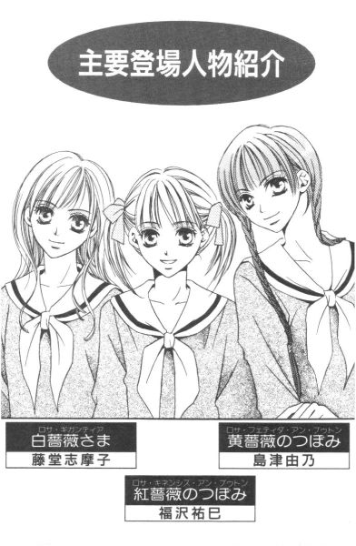

| [今野緒雪] マリア様がみてる26 | |
| 今野緒雪 | |
| (2015) | |
|
マリア様がみてる
クリスクロス
今野緒雪
|
もくじ
クリスクロス
グッドモーニング・チョコ
センチメンタル１－椿
あれれ、ティーパーティー
王道と寄り道と
白地図の狭間
紅いカードの前途
地図散歩
逍遥
×印
あとがき


マリア様がみてる クリスクロス
「ごきげんよう」
「ごきげんよう」
さわやかな朝の挨拶が、澄みきった青空にこだまする。
マリア様のお庭に集う乙女たちが、今日も天使のような無垢な笑顔で、背の高い門をくぐり抜けていく。
汚れを知らない心身を包むのは、深い色の制服。
スカートのプリーツは乱さないように、白いセーラーカラーは 翻らせないように、ゆっくりと歩くのがここでのたしなみ。もちろん、遅刻ギリギリで走り去るなどといった、はしたない生徒など存在していようはずもない。
私立リリアン女学園。
明治三十四年創立のこの学園は、もとは華族の令嬢のためにつくられたという、伝統あるカトリック系お嬢さま学校である。
東京都下。武蔵野の面影を未だに残している緑の多いこの地区で、神に見守られ、幼稚舎から大学までの一貫教育が受けられる乙女の園。
時代は移り変わり、元号が明治から三回も改まった平成の今日でさえ、十八年通い続ければ温室育ちの純粋培養お嬢さまが箱入りで出荷される、という仕組みが未だ残っている貴重な学園である。
宝探しの宝を隠す。
ちょっとドキドキ、そしてワクワク。
早く探し出して欲しいような、簡単に見つけ出されたら悔しいような。
そんな複雑な気分の上に、「探す人たちが楽しんでくれますように」という蓋を被せていざ出陣。
まずは地図を広げて、宝の隠し場所に×印をつけて。
バレンタインイベントの始まり始まり。
クリスクロス
グッドモーニング・チョコ
１
ちょっと忘れられがちだが。
二月十四日は、新聞部プレゼンツ『次期薔薇さまのお宝探し大会』当日であると同時に、全国的にはバレンタインデーなのであった。
そんなわけで、いつもよりかなり早めに登校したというのに、バスの中も校内も意外に生徒の数が多くて、祐巳を「うーん」と唸らせた。
予想はしていたものの、ここまでとは。
特に分かれ道のマリア像の側には、姉妹らしき生徒たちが何組かスタンバイしていて、朝のお祈りをする生徒たちが途切れると、一組ずつ進み出て厳かにチョコレートの授受を行っているのだった。
こんなに校内に生徒がいては、朝のうちにカードを隠して放課後を待つ、なんて芸当はできるはずがない。事前の打ち合わせで、早々に却下になったのは正解だった。
しかし去年、祐巳のお姉さまである小笠原祥子さまは、それをやってのけたのだからすごいと思う。いったいぜんたい、何時に登校したのだろうか。
ロッカー式の下駄箱の蓋を開けたら、紅いリボンのついた茶色い小さな包みと、可愛いピンクの花柄の紙袋が、ちょこんと入っていた。
「......」
一瞬、間違えて別の人の場所を開けてしまったのかと思って、祐巳はあわてて蓋を閉めた。毎日毎日同じ場所に靴を入れること約十ヶ月、確認しなくても、左手が吸いつくようにして自分の下駄箱に伸びるようになっていた。なのに、今日に限って、どうしたことか。
取りあえず、照れ隠しにポリポリと頭をかいた。幸い、近くに生徒の姿はなかったから、照れ隠しをする必要もなかったわけだが。
それはさておき、あらためて扉部分に填め込まれた名札を読む。
「あれ？ 『福沢』ですけれど」
そして、二年松組に福沢さんは一人だけだ。
「ってことは......」
ここで、ここに包みと袋を入れた人間の方が間違えたと思うところが、福沢祐巳らしいところなのである。だから当然考えた。この拾得物を、どこに届けたらいいのだろう。
そこに。
「あらー、祐巳さんモテモテねえ」
その声に振り返れば、いつから側にいるのか、藤組の桂さんがニコニコ笑いながら、祐巳の下駄箱を覗き込んでいた。
「えっ!?」
「えっ、って何よ。バレンタインデーでしょうが、今日は」
桂さんは自分の手提げから、ＣＤケースを二枚重ねたくらいの包みを取り出して「ね？」と言った。察するに、それはテニス部のお姉さまに渡すチョコレートらしい。
「ってことは......？」
これらはどっちも。
「チョコレートでしょ、祐巳さん宛の」
桂さんはぐずぐずしている祐巳を押しのけて、下駄箱から包みと紙袋を取り出すと「ほら」と差し出した。
確かに。この下駄箱の所有者の性格を知ってか知らずか、どちらにもちゃんと『福沢祐巳さま』と受取人たる人の名前が記されてあった。
参った。祐巳は、熱くなったおでこを手の甲で冷やした。
「──このパターンは、想定していなかったので」
自分があげることはあっても、もらう日が来ようとは。それも、失礼ながら差出人の名前を見ただけでは誰だったか思い出せないような人たちから、である。
「相変わらず、祐巳さんって天然ボケだわね」
桂さんは、呆れたようにつぶやいた。
「だって。私、妹いないし」
「何、寝ぼけたこと言ってるの。姉妹じゃなくたって、バレンタインデーにはチョコは行き交うものなのよ。去年、身近な人たちで見てたでしょ」
「あ、はあ」
確かに、見ていました。かなり大きな紙の手提げ袋一杯のチョコレートを、なぜだか妹の由乃さん経由で受け取った令さまと、祐巳以外のチョコレートをすべて辞退した祥子さまと。おまけとして、妹以外の人に「ちょーだい、ちょーだい」と無心してチョコレートをゲットしていた、情けない某卒業生の姿も。
しかし、それが自分の身に起こる日が来ようとは。
「とにかく、ま、がんばってね」
そう肩を叩いてから、すでに上履きに履き替えていた桂さんは、小走りで教室の方へ消えていってしまった。
残された祐巳はというと、取りあえず外履きの革靴をしまい、チョコレートと思しき二つのプレゼントを手提げ袋に入れてから、上履きを履いてロッカーの蓋を閉めた。
さて、このチョコレートはどうしたらいいのだ。廊下を歩きながら考えた。
「がんばって、って言われても」
大好きなお姉さまに倣うならば、受け取ることはできない。さりとて、毅然と突き返せるほどの度胸も信念もない。
もちろん、チョコレートをもらうということは、好意を示されていることだからうれしい。その気持ちは、ありがたく受け取りたい。
けれど。もらったからには、やはりホワイトデーにお返ししないといけないのだろうか。もちろん無用の心配であろうけれど、万一、万一だけれど去年の令さまくらいもらっちゃったとしたら、どうしよう。──そんな風に。うれしくて舞い上がっている自分に、ブレーキをかけるもう一人の自分がいたりもする。
「なるほど。それを含めての『がんばって』か」
今日はこれから、いろいろやらなければならないことがあるのに。
もう一つ、先延ばしにはできない悩みが増えてしまった。
２
二年松組教室は、甘い香りでいっぱいだった。
比喩ではなく、本当にチョコレートの匂いがする。
各自があげる予定だったりすでにもらったりしたチョコレートが、机の中やら鞄の中やらロッカーの中やらに入っているのだ。もちろん、味見と称して少し多めに作ってきた物を、こっそり回し食べしている生徒の姿も見逃せない。
いつもと同じように教室の扉を開けて中に入ってきた生徒たちは、いつもと微妙に違うその匂いを鋭く察知し、「ああ、バレンタインデーなんだ」と実感する。しかし、それも最初だけのことで、しばらくすると慣れて何の匂いも感じなくなるのだった。
祐巳は鞄とコートを置いて、手提げだけ持って教室を出た。下駄箱に入っていた二つのチョコレートは、ちょっと迷って、ロッカーの中に置いていくことにした。
これからお姉さまのもとに、チョコレートを届けにいくのだ。紛らわしい包みや袋を持っていくのは、間違いのもと。去年、それで大失敗したのを忘れてはいけない。
三年松組教室の前の廊下には、取り次ぎを待っているような生徒が、何人も立っていた。
（これ全部、うちのお姉さまにプレゼントを持ってきた人たちだったら、どうしよう......）
去年と一昨年のことを知っている二年生以上の生徒であれば、マゾでもない限り、祥子さまにチョコを渡そうなんて無謀な考えを抱く人はいないだろう。けれど、一年生だったらわからない。
別に、嫉妬しているわけではないけれど、できれば自分以外の生徒が祥子さまにチョコレートを差し出すシーンに出くわしたくはなかった。その人だって、祥子さまに断られた上に、祥子さまの妹にまでその場面を見られたくはないだろう。
けれど、そんな心配は無用だった。警戒して遠巻きに眺めていたのだが、祐巳より前に三年松組を訪ねていた生徒たちは、祥子さま以外の人たちにそれぞれチョコレートを渡して帰っていった。
「あ、福沢祐巳ちゃん」
無事チョコレートを受け取ったうちの一人が、祐巳に気づいて声をかけてきた。
「祥子さん、来ているわよ」
「あ、そうですか」
「呼びましょうね」
「ありがとうございます」
「いーえ」
その人は、ニコニコしながら教室の中に戻っていった。
二月の十四日の朝、お姉さまの教室の前でうろうろしているのだ。何しに来たのかは、バレバレらしい。
「祐巳」
程なく、祥子さまは廊下に出てきた。
「ごきげんよう、お姉さま」
相変わらず、お美しい。冬の乾燥なんて何のその。お肌はしっとり。髪の毛もサーラサラ。
「ごきげんよう」
「あの」
祐巳が手提げ袋からチョコレートを取りだそうとすると、「待って」と止められた。
「場所、変えましょう」
「は？」
「いいから」
祐巳の手を引いて、廊下を歩いていく祥子さま。祐巳としてみれば、チョコレートを渡したらすぐに帰ろうと思っていたのだが、やっぱりそれに相応しい場所を選ぶべきだったのかもしれない。
「祐巳は気づかなかったかもしれないけれど、私のクラスメイトたちが興味本位で教室から覗いていたのよ」
「え」
「それも、かなりの人数。それじゃ、落ち着かないでしょう」
けれど、言うまでもないが、今日はバレンタインデー。こちらが思いつく場所は、どこもかしこも先客がいるのだった。
「行くところ行くところ、定員オーバーって感じね」
もちろん、ラッシュの満員電車なんかと比べればガラガラなんだけれど、それでもある程度他の人たちとの間隔は確保されないと。後から来て、いい雰囲気でチョコレートを渡している人たちの邪魔をしては申し訳ない。
こんな時こそ、役得で薔薇の館が便利に使えるものなのだが、今日は宝探しの本部となるため、祥子さまは遠慮しているようだ。別に、関係者以外立入禁止というわけではないのだけれど。去年の祐巳も入りにくかったから、気持ちはわかる。
結局、薔薇の館の裏までやって来て、やっと祥子さまの足は止まった。
「どうして、お姉さまのクラスの方たちが覗くんです？」
祐巳は、歩いている間ずっと考えていた疑問を口にした。紅薔薇姉妹のツーショットなんて、今更珍しがることもないだろうに、と。
「去年、私がことごとくチョコレートを辞退したくせに、祐巳のチョコレートだけは受け取ったって知ったからでしょう。私がどんな顔をして──」
そこまで言って、祥子さまは口をつぐんだ。
「どんな顔をしてチョコレートを受け取るか、私にだけ見せてください」
祐巳は、手提げから紅い包みを取り出して、お姉さまの前に差し出した。
「......催促したみたい」
祥子さまは、はにかむように笑った。
「そんなこと」
祐巳が首を横に振ると、「ありがとう」と言って受け取ってくれた。そして、大胆にもその場で銀色のリボンを外して、包みを開く祥子さま。
「あら」
現れたのは、梅干し大の手作りトリュフチョコレートが十個。
「これは、......びっくりチョコレート？」
見た目にどこか見覚えがあったから、そう尋ねたのだろう。けれど、去年のそれは苦し紛れというかアクシデントの照れ隠しというか、つまりは祐巳が急ごしらえでこねくり上げたネーミングなのであった。けれど、今年は。
「の、第二弾です」
「第二弾？」
「びっくりするくらい愛情がこもっています」
「ふふふ」
祥子さまは一つ摘んで口に入れた。
「本当」
「でしょう？」
二人は、目を見合わせて笑った。幸せだった。
「それじゃ、これは私からね」
今の今まで気がつかなかったけれど、祥子さまもまた手提げ袋を持ってきていて、そこから魔法のように小さな包みが出てきた。
「まさか、チョコレート、ですか」
緑色に焦げ茶色のラインが入った包装紙に、黄色いリボンが結ばれている。
「今日こういうスタイルの物を手渡されたら、かなりの確率で、チョコレートだと思うけれど？」
「そうですね。でも、──これも、想定していなかったので」
「も？」
「いえ、こちらの話で」
それはさておき、お姉さまにはあげることはあっても、もらうことなどないと思っていた。もちろん、令さまと由乃さんの例もあるから、姉妹によってはいろいろだってわかってはいる。わかってはいるけれど、自分のお姉さまが、あの小笠原祥子さまが、チョコレートを準備してくるとは、お釈迦様でも、もとい、マリア様でも思うまい。
「去年、祐巳がチョコレートをくれた時、とてもうれしかったの。だから、今年は私も」
気持ちを届けたくて、と言葉が添えられた。
「お姉さま......」
これがあったからこそ、祥子さまはクラスメイトたちの視線から逃れたかったのだろう。あの、バレンタインデーにはチョコレートを突き返すことで有名な祥子さまが、自らチョコレートを持ってきたなんて、ちょっとした騒ぎになるに決まっている。
「あ、ありがとうございます」
気持ちともども受け取って、胸に抱いた。
「市販品で悪いけれど。祐巳みたいに上手に作る自信はなかったし、それにここのチョコレートはおいしいのよ」
お姉さまお勧めのチョコらしい。
「このチョコレートには、思い入れがあって」
祥子さまは指さして言った。
「幼稚舎の頃、引っ越ししてしまったクラスメイトが、お別れの日にくれたチョコレートなの。その子の顔も名前も、もう忘れてしまったけれど。その時もらったチョコレートの味だけは、ずっと忘れなかった。それで、時々思い出しては同じ物を求めたりして」
幼稚舎の頃のことはあまり覚えていないという祥子さまが、思い出話をするのは珍しいことだった。そのクラスメイトの引っ越しに関わるエピソードは、余程、印象に残っていたのだろう。
「......私ね、しばらくはその子にもらったチョコレートの包装紙を、大切に取っておいたのよ。アイロンをかけてもらってね」
「これ、ですか？」
祐巳は、緑と焦げ茶の包装紙を眺めた。
「いいえ」
今の時期はバレンタインデー仕様だから、通常の物とは違うラッピングをしてくれるらしい。また通常使われている包装紙も、十年前と今とでは、多少デザインが変わっているとか。
「でも、味は同じはずよ。食べてみて」
勧められて、祐巳は包装紙を破けないように剥いて、箱を開け、一つ食べた。
「おいしいです」
祥子さまの、思い出の味だ。お互い箱を差し出して、自分が持ってきた方のチョコレートも口に入れた。二人同時にほほえむ。今、二つの味が混ざり合って、口の中いっぱいに広がっている。
通算三つ目、祥子さまの中では二つめのトリュフチョコを摘みながら、祥子さまが静かに尋ねた。
「これは、私にだけ？」
「え？」
「去年は、聖さまにも差しあげたじゃない」
「ああ──」
手作りのチョコレート。他にも誰かのために用意してあるのか、とそういうことらしい。
「お姉さまにだけです。何せ、今年のは愛情たっぷりですから」
「びっくりするくらいね」
「ええ」
たぶん、お姉さまが確認したのは、嫉妬からではないのだと、祐巳にはわかった。最初はわからなかったけれど、本当に聞かれている言葉が何だったのか、じわじわと心の中にしみ出てきた。
「しばらく、瞳子ちゃんとは距離をおこうと思っているので」
「そう」
「何か、誤解があるみたいなんですけれど。瞳子ちゃんが冷静になった上で、私の話を聞く気になってくれないことには、ますます混乱しそうだし」
「そうね」
祥子さまはうなずいた後、もう一粒、トリュフチョコレートを口に入れた。
「本当にもったいないこと」
こんなに愛情たっぷりなのに、──と。
３
その後二人は別れて、薔薇の館には祐巳一人で行った。
別に中に入るくらいは大丈夫だと説明したのだが、祥子さまはやはり遠慮した。宝探しの参加者が本部に近づけば、いらぬ誤解を招きかねないとの配慮なのかもしれない。
ただでさえ、主催者側の姉妹は有利。一切情報を漏らしてはいないけれど、そう誤解する人の気持ちもわからないでもないし、実際、嗜好や性格を把握している分、身近にいる人の方が隠し場所を推理しやすいかもしれない。
扉を開けながら考えた。
だからこそ、祥子さまはチョコレートの受け渡しが済んだら、すみやかに祐巳の側から離れたのだ。
いくら何でも、他の参加者たちだって、バレンタインデーに姉妹でチョコレートを交換するくらいは多めに見てくれるだろう。ここしばらくの間は、こうして祥子さまも、そして令さまも薔薇の館に近づかなかったのだから。
しかし、そこまできっちりけじめをつけているということは、祥子さまは参加する気満々なわけだ。みんなに混じってカードを探し回るという図は、あまり想像つかないけれど。
階段を上ろうと手すりに手をかけたところで、祐巳の耳は、一階の部屋から漏れてくる話し声をキャッチした。
（由乃さんたちかな......？）
すでに片方かけていた足を一段目から下ろして、そちらへと向かった。何日か前に、宝探しの前にちょっと一階も片づけておこうと相談し合ったまま、忙しさにかまけて今日の日を迎えてしまったのだ。
というわけで、祐巳は軽い気持ちで扉を開けた。私もお片づけに参加します、そんなノリで。
「ごきげ──」
だが、次の瞬間自分の目に映った光景に驚いて、思わずバタンと扉を閉じた。
「し、失礼！」
わっわっわっわっ。今の何だ。まぶしくって目がつぶれる。
「祐巳さん？」
閉めた扉の後ろから、志摩子さんの声が聞こえた。
「ごめん、私っ」
見てはいけないものを見てしまいました。
「何を謝っているの」
祐巳が背中でもたれていた扉が、ゆっくりと開いた。
「だって。チョコレートの受け渡ししていたんでしょ」
「そうだけれど。別に見られて困ることではないし。それにもし見られたくないのだとしたら、本当に誰もやってこない場所に行くから大丈夫よ」
大丈夫、と言われましても。
「まるで、思いがけずに着替え中の女子を見てしまった、男子中学生みたいなリアクションでしたね」
姉が姉なら妹も妹。続いて部屋から出てきた乃梨子ちゃんも、ケロリとしたものである。これじゃ多数決で、過剰に反応した祐巳の方がおかしいということにされてしまいそうだ。
「あら、着替えだったらそんなにも驚かないわよね？私たちは、一年生の時同じクラスで、しょっちゅう一緒に着替えていたもの」
突っ込まないけれど。その受け答え、かなりトンチンカンだよ志摩子さん。
しかし、ある意味着替えよりも「見ちゃいけない感」がある光景だった。チョコレートを挟んで、向かい合う姉妹。物置のような雑多な空間が、二人の周りだけキラキラ輝いていて。実際にはその場に存在していようはずもない、白薔薇なんてものの幻覚まで見えてきちゃう。
もう、何ていうか「二人の世界」って感じで。文字通り、誰も二人の間には入り込めません、みたいな。
とにかく美しい、美しすぎる。姉妹による、チョコレート授受のワンシーン......！
そこまで思い切り突っ走ってから、祐巳は「ちょっと待てよ」と立ち止まった。
もしかして、自分たちも客観的に見たらあんな感じだったのだろうか。試しに、自分で自分たちの姿を想像してみて、思わず顔から火が出そうになった。
「祐巳さんって──」
「ええ。見ていて、かなり面白いですよね」
人の顔を観察して、仲よくつぶやき合うとは。ああ、なんて失礼極まりない姉妹でありましょうか。
白薔薇さんちのチョコレートは甘くてとろとろなんだろうな、と思ったら、「普通のミルクチョコレートですよ」って乃梨子ちゃん。志摩子さんは、去年作ったのと同じマーブルケーキなんだって。
なんだ、ここもお姉さまからのチョコレートがあるんだ。──っていうか、またもや考えていたことが顔に出ていたらしい。
「祐巳さん、気を遣わせてしまって悪かったわね。別に、渡すのは放課後でもいいと思っていたのだけれど。去年のこともあるから」
志摩子さんが小さく笑った。
「去年......ああ」
思い出して、祐巳もうなずく。すると、乃梨子ちゃんがすかさず質問してきた。
「去年のことって？」
いくら仲よし姉妹であっても、過去のすべてを把握しているわけではない。
「志摩子さんが、お姉さまに渡そうと思って隠しておいたチョコレート......あっと、チョコじゃなくてケーキだっけ？それが、宝探しが終わったら行方不明になっていてね」
祐巳は一階の部屋を指さして言った。そこに、と。
「えーっ!?」
満足満足。乃梨子ちゃんは、話し手が期待していた通りの正しい反応をしてくれる。
「宝探しの参加者が、勝手に食べちゃったんだって」
「そ、そんな、酷い。......っていうか、そんなことをする生徒が、リリアンにいたっていうこと自体が驚きですが」
「いらしたのよ、一人」
「ね」
志摩子さんと祐巳の表情から、勘のいい乃梨子ちゃんはすべてを察して、もう一度「酷い」を口にした。
「私、やっぱりどうしても信じられません。あの方が、お姉さまのお姉さまだったという過去が」
「あら、聖さまは素敵だったわよ。下級生たちから人気もあったし」
聖さま贔屓の祐巳ではあるが、それを差し引いても、この学園におけるあの人の評価は、かなり高かった。
「素敵なのはわかります。人気もあったんでしょう。でも、ギャップです、ギャップ。この際自分のことは棚に上げちゃって言いますけれど、どうしてそんな人が、志摩子さんとくっついちゃったのかなぁ」
残念だか、がっかりだか、解せないだか、そんな表情でうつむく乃梨子ちゃん。
「その分じゃ、志摩子さんと祥子さまのことなんて話せないね」
本当に内緒話のようにコソッと言ったつもりだったのに、祐巳が志摩子さんに耳打ちした瞬間、乃梨子ちゃんは顔を上げた。
「何です、それは」
大好きな「志摩子さん」という言葉には、反応してしまうらしい。
「志摩子さんが、祥子さまの申し出を蹴って聖さまを選んだんだってこと」
「えーっ。どうしてー？ そっちの方が、らしいのに」
素直な乃梨子ちゃんは、正直な感想を言ってくれちゃう。
「こーら。それじゃ私の立場はどうなる」
祐巳がわざとにらみつけると。
「あ」
今更ながら口を押さえた。気づくの遅いって。
「いえ、別に祐巳さまが紅薔薇さまと『らしくない』って言っているわけではなくて」
フォローしようとして、どつぼにはまるパターン。普段は冷めているくらいの乃梨子ちゃんが必死で弁解する様がおかしくて、もっと転がしてやろうと思ったけれど、ここでトリオ漫才しているほど暇じゃないので、このくらいで勘弁してあげることにした。
階段を上りながら、志摩子さんが笑った。
「聖さま、今頃きっとくしゃみしていらっしゃるわね」
聞いている者がとろとろになっちゃうような、甘い声で。
４
「遅ーい」
薔薇の館の二階で待ちかまえていたのは、しかめっ面だった。
「そりゃ」
由乃さんが言った。
「白薔薇さんちも紅薔薇さんちも、本日は朝からお揃いでいらっしゃいますもの。仲よくチョコレートを渡したり渡されたりで、お忙しゅうございましたでしょう。でも生憎、黄薔薇家では当主が受験で不在ですからねぇ」
どこで覚えてきたのか、まるで夫が単身赴任してる寂しい妻のひがみ、みたいなセリフだ。
「令さま、来ないの？」
「さあね。試験が終わったら来るみたいなことを言っていたけれど、どうかな？不在者チャンスに投票していたから、来たって宝探しには参加できないし」
なるほど。不機嫌な理由は、チョコというより令さまがいないということらしい。従姉妹でお隣さん同士の黄薔薇姉妹は、去年だって家に帰ってからチョコレートの授受を行ったって話だ。
「まあまあ、由乃さん。集合時間の八時までに、みんな間に合ったんだし」
と、なだめるのは現在新聞部の部長にして『リリアンかわら版』編集長の山口真美さん。新聞部員は、部長以下七名がすでに来ている。
「これまた姉妹お揃いの、真美さんに言われたくはないわね」
真美さんの妹の日出実さんは新聞部員であるから、もちろんこの場にいるのだった。
「あら、でもうちはチョコレートないわよ」
真美さんはさらりと言った。
「ない？」
由乃さんが聞き返す。バレンタインデーとは、すべての姉妹がプレゼントをやり取りするものだと決めつけている。
「今日は、新聞部が総力をあげて開催するイベントの本番よ。私たちに、そんな暇も余裕もあるわけないじゃない。ねえ？」
妹に視線を投げて、同意を求める真美さん。しかし、いつまで経っても日出実さんからは「はい」や「もちろん」が返ってこない。
「あの......、もしや日出実さん」
乃梨子ちゃんが、恐る恐る声をかけた。すると、日出実さんは怒ったような顔をして、真美さんに可愛い紙袋を突きつけた。間違いなく、「差し出した」ではなく、「突きつけた」である。
「ひで──」
「暇も余裕もないのに、こんな余計なことにエネルギーを使って申し訳ありませんでしたっ」
「いや、そんな」
思いがけないプレゼント攻撃に、どぎまぎする真美さん。ここの二人は、姉妹というより上司と部下といった関係に近い。たぶん、日頃から妹に甘えられたりやさしくしてもらったりしていない分、真美さんもこういう場合、どう対処したらいいのかわからないようだった。
（まずは、ありがとう、でしょ）
祐巳は真美さんの後ろに回って、こそこそと耳打ちした。
「まずは、ありがとう」
「まずは、は余計だってば」
（とてもうれしいわ）
志摩子さんも加わった。
「と、とてもうれしいわ」
言われた通りに繰り返すのみ。真美さんは何かもう、腹話術の人形のよう。
「もう、いいです」
日出実ちゃんは、拗ねたように背を向けた。
「私のお姉さまは、新聞部の鬼編集長。多大な期待などしておりません」
（鬼、だったのか）
みんながそう心の中でつぶやいたであろう、その時。
「その通り」
魂の抜けていたようだった真美さんが、ピンシャンと背筋を伸ばして言った。
「私は、『リリアンかわら版』の鬼。バレンタインデーだからと言って、浮かれてなんかいられないわ」
「真美さん、そんな」
せっかく妹が持ってきたものを、踏みにじるような発言はまずいのでは。
「私の頭の中は今、今日のイベントのことで一杯一杯。日出実は、そんなことさえわからない妹じゃないはずよ」
そこまで言って、真美さんは「で？」と妹に向き合った。
「これは、いったい何なの」
「ち、チョコレートクッキーです」
「そう。じゃ、イベントの後にいただくわね。きっと、疲れて甘い物が欲しくなるはずだから」
「はいっ」
日出実さんは、うれしそうに返事をした。
なんだなんだ。そんなんでいいのか。よくわからないうちに、丸く収まってしまったぞ。祐巳だけでなく、由乃さんや志摩子さんたちや、その他の新聞部員たちも、目を白黒させている。
姉妹というやつは、計り知れない。十組いれば十通り、百組いれば百通りの関係があって、どれ一つとして自分たちと同じ枠の中には収まらない。
でも、それぞれ違っているからこそ面白いのかもしれなかった。
「それじゃ、最終打ち合わせといきますか」
真美さんの一言で、全員が着席して真面目な顔になる。
「まずは、このタイムテーブルにそって、各自の予定行動の確認から──」
みんな、このイベントを成功させたいという気持ちは一緒だった。
５
予鈴ギリギリで二年松組教室に戻ると、扉の前で一年生の内藤笙子ちゃんとすれ違った。
（ということは......）
「お帰り、お三人さん」
予想に違わず、中に入った所にいたのは武嶋蔦子さんだった。ということは、間違いなく、笙子ちゃんは蔦子さんに──。祐巳と由乃さんと真美さんは、顔を見合わせて「なるほど」と笑った。蔦子さんの手もとを見れば、リボンこそついていないが小さくて茶色い紙袋が握られている。
「それ、笙子ちゃんから？」
「あ、......うん」
蔦子さんは、うれしいというより困惑した表情でうなずいた。
「どうしたの？ それ、チョコじゃないの？」
「うん」
うん、というのは、チョコなのか、違うのか。ため息をつきながら席に戻るので、祐巳と由乃さんと真美さんは、当然気になって追いかけた。
「チョコなの？ チョコじゃないの？」
「うれしくないの？」
「どうしてそんな顔しているの？」
蔦子さんの机の両側に立って、三人して代わる代わる質問をする。自分の椅子に着席した蔦子さんは、紙袋を前に置いたままもう一度深いため息をつき、それから顔を上げた。
「あのさ」
「うん」
「私も、くれるんだったらチョコレートだろうって、思い込んでいたんだよね」
「違ったんだ？」
まあ、チョコレート以外にだって、いろいろあるでしょうけれど。例えば、日出実さんのようにクッキーとか、志摩子さんのマーブルケーキとか。もちろんお菓子だけじゃなくて、手作りマフラーとかポーチとかっていうパターンも。でも、それにしては袋が小さい。
「もらって困る物だったの？」
笙子ちゃんが、蔦子さんに「困る物」をプレゼントするとは思えないけれど、一応聞いた。人によって、趣味嗜好ってものは違うから。
例えば。祐巳たちが知らないだけで、笙子ちゃんがトカゲとか大きなクモとかをたくさん飼っていて、一匹分けてくれたとしたら......。それは、やっぱり困ると思う。
けれど、蔦子さんは否定した。
「ううん。すごくうれしい物だった」
「じゃ、何なのよ。どうして困った顔しているの」
由乃さんが、イライラと質問をぶつけた。
「ただ、悩んでいるのよ」
「え？」
「バレンタインデーに写真のフィルムをプレゼントされたら、ホワイトデーに何をお返ししたらいいんだろう、って」
「......は？」
バレンタインデーにフィルムって。
ここにも一つ。
それぞれ違って面白い、バレンタインデーのパターンみっけ。
センチメンタル１－椿
１
一方。
一年椿組の教室では、白薔薇のつぼみが悩んでいた。
「ごきげんよう」
今朝はいつもよりかなり早く登校して、荷物を置いたらすぐに教室を飛び出して、志摩子さんにチョコレートを渡しにいったから、イベントの最終確認を終えて薔薇の館から戻った時には、教室にいるクラスメイトたちの大半が今日はお初にお目にかかる人たちだった。当然のように、それぞれに「ごきげんよう」を言って自分の席に着くのだけれど、その中の一人である松平瞳子が、乃梨子の頭を混乱させるのである。
あの日。
先週の土曜日。なぜだろう胸騒ぎがして、帰りのバスを途中下車し、学校へと引き返した。別れ際の瞳子の表情が、乃梨子を呼び戻したといってもいい。
その判断は間違っていなかったのだと、乃梨子は今でも思っている。戻ってみると、瞳子は一人中庭で、うずくまるようにして数をかぞえていた。
いや、ずっと一人だったわけではない。少し前まで、瞳子の側には紅薔薇さまがいた。廊下にいた乃梨子の姿をガラス越しに見て、そしてその場を去っていった。まるで、「あとは任せる」といった表情だった。
すれ違った時、何があったのかは聞けなかった。紅薔薇さまは厳しい表情をしていて、とても聞ける雰囲気ではなかった。
いつも優雅で高飛車で女王さまのような人が、まったく余裕のない表情をしていたのだ。もしかしたら、乃梨子が戻ってきて一番安堵したのは彼女ではなかったのかと、思わせるほどだった。
数をかぞえていた瞳子の肩に、乃梨子は触れた。あの時、瞳子は今にも泣きそうだった。もう、すでに泣いていたのかもしれない。
紅薔薇さまとの間に、何かがあったはずだった。けれど、それがどのようなものであったのかは、想像もつかない。
たぶん、祐巳さまが関わっている。根拠はない。ただの勘だけれど、間違いはないだろう。だからこそ、紅薔薇さまは余裕をなくしてしまったわけだし、瞳子は打ちのめされたのだ。
紅薔薇さまも瞳子も、祐巳さまを大好きだから。だから、祐巳さまが絡んだだけで、平静を失ってしまう。
そう。あの時の瞳子は、いつもの瞳子ではなかった。
水に溺れかけた人が、差し伸べられた手を夢中でつかむように、乃梨子の手をきつく握りしめて名前を呼んだ。
（あの時、心を開いてくれたのかと思ったんだけれど）
しかしあの後、特に何も話をしてくれないまま駅で別れて、週明けにはケロリといつもの瞳子に戻っていた。
土曜日の放課後の、あれはいったい何だったのだろう。まるで、夢でもみていたみたいだ。
「瞳子」
試しに、呼んでみる。
「なあに？」
ほら。いつものように、作り笑顔で振り返る。
「今日の宝探し、出る？」
「さあ」
まだ迷っているのか、それとも決めているのに言いたくないのか。そうやってまた、適当にはぐらかして逃げるつもりだ。
「乃梨子に心配してもらうことじゃないわよ」
乃梨子。
それが、乃梨子をまた悩ませる。
月曜日からずっと、瞳子は乃梨子のことを「さん」なしで呼んでいる。だから、やはり土曜日のあれは夢ではないという結論に達するのだ。
瞳子は、いったい何を考えているのだろう。
親友のつもりでいる乃梨子にも、何も話してはくれない。
それは。
もしかしたら、瞳子自身も今、悩みの真っ直中にいるということなのだろうか。
２
休み時間、教室を出ると、廊下に祥子お姉さまがいた。
偶然一年生の教室の前を通りかかったのか、それとも待ち伏せをしていたのかはわからない。瞳子が、会釈ともうつむきともとれる頭の傾け具合で、前を通り過ぎようとすると、祥子お姉さまが言った。
「逃げるの？」
（逃げる？）
瞳子は振り返った。逃げるとは、何のことを言ってるのだろう。
「宝探しのことよ。出るの？ 出ないの？」
「おっしゃっている意味がわかりません。私が宝探しに出ようが出まいが、紅薔薇さまには関係のないこと。それに、たとえ出なかったとしても、逃げると言われる筋合いはないと思いますけれど」
先週の土曜日。祥子お姉さま流に言えば、瞳子が紅薔薇姉妹を「見くびった」ことに関しては、悪かったと思っている。実際、謝りもした。でも、それとこれとは別の話だ。
「そうかしら」
祥子お姉さまは、つぶやいた。
「私には、一貫しているように思えるけれど」
「一貫ですって？」
「祐巳から逃げている、って意味ではね」
「──」
何か言い返そうとしたのだが、瞳子は言葉を探せなかった。黙ってしまえば、即ち肯定の意味にとられてしまうかもしれない。それでも、唇からは陳腐な言い訳すら出てこなかった。
「祐巳と向かい合うの、怖い？」
「え？」
「怖いわよね。私も怖いもの」
祥子お姉さまの口からは、思いがけない言葉が飛び出した。
「あの子は真っ直ぐだから。あの子自身はそんなつもりはまったくないでしょうけれど、一緒にいると、自分の弱い部分を突きつけられるわ。まるで、歪みもなく曇り一つない鏡に映し出されるように。見たくない、認めたくない、そんなものまで」
うつむきがちに、フッと笑う。その表情を見て、つい瞳子は尋ねてしまった。
「それでも、一緒にいらっしゃるのはなぜなんですか」
「決まっているでしょう？ 祐巳が好きだからよ」
祥子お姉さまは顔を上げて、キッパリと言い切った。
「弱い部分を突きつけられるのが、何なの？ それは確かにきついけれど、耐えられないことではない。そんなことより、祐巳と一緒にいられなくなる方が辛いわ。私はね、今の自分に嫌な部分があるのなら、祐巳という鏡に映りながら、その部分を好ましく変えていけばいいと思うようになったのよ。真っ直ぐな若木がうらやましいのなら、もたれながらでもいい、巻きついてでもいい、一緒に太陽を目指して枝を伸ばそう、って決めたのよ」
ただ怖がっているより、向上するべきだと、そう言っているのだろうか。一緒にいることに、意味をもたせるためにも。
なぜ、今そんな話をするのだろう。
祥子お姉さまは、あの日以来「見くびられた」と怒っているはずだった。だったら、もう瞳子のことは切り捨ててしまえばいい。それなのに、なぜ──。
「いつか祐巳が妹を作る日が来るって、覚悟していた。あの子の妹になるのはどんな子だろう、と考えるのは、楽しくも寂しくもあった。でも、祐巳が選んだのであれば間違いないはず。そう、信じていた。今でも信じたいわ」
祥子お姉さまは、静かな目をして言った。
「でも、あなたは、私のライバルにすらなってくれない」
静かな目の中にも、闘志が見て取れた。
「もちろん。今回の宝探しにしても、祐巳のカードを一番先に見つけられた人が、一番祐巳のことを想っているということにはならないわ。けれど、私は私のライバルになるとしたら瞳子ちゃんしかいない、って思っていた。けれど、スタートラインにすら立ってもらえないのでは、仕方ないわね」
大きなため息。
それが挑発であるということは、わかっている。わかっているけれど──。
「待ってください」
瞳子は次の瞬間、去りかけた祥子お姉さまを呼び止めていた。
「出ないとは言っていません」
すると祥子お姉さまは、振り返って満足そうにほほえんだ。
「そうなの？」
「ええ。出ます」
挑発にのることは、決して嫌な気分ではなかった。
あれれ、ティーパーティー
１
放課後。
バレンタインイベントは、参加者も主催者も、掃除を終えたら速やかに中庭に集合、ということになっている。
特に宝を探す側の生徒は、「三時四十分の時点でその場にいなければ失格」と再三にわたって『リリアンかわら版』で脅されていたため、隠してありそうな場所の当たりをつけたりしながら若干軽めに各自の分担区域の掃除を行い、三時三十分、つまり十分くらい前までにはほとんどが、余裕をもってスタンバイしていた。
祐巳たちはスタートギリギリまで、本部である薔薇の館の二階で控えていた。
「ほっほう」
カーテンの陰から窓の下を覗き見していた由乃さんが、振り返りもせずに言った。
「祥子さまや令ちゃんたちの時と落差があったら嫌だな、って思っていたけれど。結構な人数集まってるよ」
部屋には他に三人の人間がいるのだが、みんな窓辺から離れて、由乃さんの実況を聞いている。由乃さんのそれは、あくまで覗き見。様子が気になるからって、全員が鈴なりになって見物すれば、いくら何でも中庭に集まった生徒たちの目にもつく。覗き見が見つかる図というのは、かなり恥ずかしいものである。どうせ見られるのなら、マリー・アントワネットのように、バルコニーに立って観衆たちに向かって優雅にお辞儀するくらいのことをしないと。
「あ、祥子さまがいる。その周りに、祐巳さんファンがじわじわと近づきつつあるわよ。どうするつもりかしら。去年の私たちにそうしたみたいに、やっぱりくっついて回るつもりなのかな。だとしたら、怖いもの知らずよね」
そこに、すかさず乃梨子ちゃんの合いの手が入る。
「『あなた方、人の後ろばかり歩くのやめていただけない』とか」
「おお、上手い！」
思いがけなく登場した物真似に、やんややんやと拍手する由乃さん。志摩子さんは、お姉さまらしく「乃梨子」と窘める。
祐巳は、椅子に座ったままじっとしていた。
「ねえ。まだ始まってもいないんだから、そんな所で緊張していることないんじゃないの？」
由乃さんが、振り返って笑った。
「そりゃ、まあ、そうなんだけれど」
だからといって、何をしていたらいいのだろう。この期に及んで今更作戦会議もないし、進行や裏方の仕事はすべて新聞部がやってくれることになっているしで、本日の主役たちは今のところやるべきことがない。
「そうだ。上履きについた土を気にして、薔薇の館に入れない人がいると困るから今のうちに──」
思いついて、椅子を立ち上がりかけると、乃梨子ちゃんが言った。
「濡れ雑巾ですよね？ さっき薔薇の館の入り口に、三枚ほど置いてきました」
「あ、......そう」
で、着席。
「始まっちゃうと見にいけなくなるから、一階の部屋の様子を」
「昼休みに、みんなで軽く片づけたじゃない」
壁に掛けられていた伝言用のボードを水平に直しながら、志摩子さんが笑う。
「お客さまがいらっしゃるからって特別おめかししないで、普段のままの薔薇の館を見ていただきましょうって言ったの、祐巳さんよ」
「そうでした」
結局、座って時間がくるのを待つしかないようだ。
そういえば、下手に動くとかえって迷惑だと、真美さんにも口を酸っぱくして言われていたっけ。とにかく祐巳さんは始まるまでも始まってからも言動にだけは注意して、と。思わずヒントを漏らさないように、と。日頃から、思っていることが顔に出るタイプである祐巳は、要注意人物のレッテルが貼られている。
「驚き」
イベント開始五分前というところになって、中庭の実況レポートをしていた由乃さんが声をあげた。
「瞳子ちゃんが来た」
もちろん、そのつぶやきを耳にした他の三人もまた、驚いたのは間違いない。
「瞳子が......」
同じクラスの乃梨子ちゃんも、知らなかったらしい。というより、午前中に言葉を交わした時には、瞳子ちゃんははっきりとした答えを出さず、どちらかというと参加しなさそうな雰囲気を醸し出していたのだとか。
「祐巳さん」
志摩子さんが、肩に触れた。よかったわね、と言っているように。
「うん」
祐巳も笑顔を返した。
これは、瞳子ちゃん側から歩み寄ってくれたということだろうか。もしそうでなくとも、瞳子ちゃんが宝探しに参加する気になったことは、祐巳にとっては喜ばしいことだった。
土曜日、校舎を一緒に出てマリア像の前で別れた。あの時、瞳子ちゃんが祐巳にぶつけた怒りはいったい何だったのか、いまだにわかっていない。
たぶん誤解があるのだと、そう思う。
もしかしたら自分が鈍感なだけで、瞳子ちゃんの気に障ることをしているのに気づいていないだけなのかもと、何度となく考えたりもした。
誤解があるのなら解けばいい。不快にさせたなら謝ればいい。けれど、原因が何であるかがわからないうちは、それをすることさえできなかった。「わからないけれど、ごめんなさい」では、ますます怒りをかうだけだ。
だから祐巳は、瞳子ちゃんとのことはしばらくそっとしておくことにした。少し時間をおいて、瞳子ちゃんが会って話をする気になってくれるまでの間。
保留にしておいて、何か取り返しのつかないことにでもなったら、と考えないこともなかったが、瞳子ちゃんには乃梨子ちゃんという友達がいる。乃梨子ちゃんがいるなら大丈夫だと思った。
瞳子ちゃんの怒りはなんだったのか、未だにわからない。わからないけれど、あの感情の高ぶりは相当なものだった。
反動で、心を閉ざしてしまうようなことにならなくてよかった。瞳子ちゃんは、ちゃんと学校にも来ている。そして今日、こうしてイベントに参加する余裕があることもわかった。
「祐巳さん、見る？」
由乃さんは場所を譲ってくれようとしたけれど、祐巳は椅子に座ったまま辞退した。
瞳子ちゃんがいるなら、それでいい。瞳子ちゃんがいるなら、それだけでいい。
「お三人さんと乃梨子ちゃん。そろそろ中庭にお出ましいただこうかしら」
階段を上って、真美さんが迎えに来た。
「お出まし、だって」
まるでお姫さまみたいね、と四人で顔を見合わせて笑った。
そしてお姫さまたちは、手を重ねて「ファイト！」と気合いを入れてから、いつものようにギシギシ音をさせながら階段を下りていったのだった。
２
「それでは時間になりましたので、これより『次期薔薇さまのお宝探し大会』を始めさせていただきます」
真美さんが、拡声器を使って宣言した。
次期薔薇さまこと、志摩子さん由乃さん祐巳の三人が姿を現した瞬間だったこともあって、中庭に集まった参加予定者の歓声が、冬の曇り空にどよめいた。
「まずは、これをもちまして『不在者チャンス』の応募は締め切らせていただきます」
その言葉を合図に、乃梨子ちゃんが薔薇の館の玄関に設置されていた応募ボックスを手にして現れた。真美さんがポストの投函口にあたる部分にクラフトテープを貼って封をし、その上から箱にはみ出す勢いで「カード回収前開封厳禁」と太字マジックペンで書いた。これで真美さんであろうと次期薔薇さまの三人であろうと、もうこの箱の中身には手出し出来なくなったわけである。
今から宝探しに参加しようという人たちは「不在者」ではないわけだから、応募ボックスに投票する立場ではないのだが、真美さんのパフォーマンスにつられて「おおっ」という声があがった。
「さて、参加者の皆さん。申込用紙はお手もとにございますでしょうか。もしお持ちではない方は、手を上げてください」
パラパラと手が上がったのを確認し、不在者チャンスの箱を地面に下ろした乃梨子ちゃんが、今度は参加申し込み用紙を手に奔走する。その様子を見ていた一部の生徒たちが、「おや？」という表情を浮かべた。
どうして、白薔薇のつぼみがここで働いているのか。真美さん以外の新聞部の部員は、いったいどうしてしまったのだ、と。
実は、それとこれは同じようでいて微妙に異なる理由があった。
「宝探し参加者で、次期薔薇さまの姉妹でいらっしゃる方はこちらに。今年も、スタート時間を五分遅らせるというハンデをつけさせていただきます」
真美さんの呼び出しに対し、「こちら」に現れたのは祥子さま一人だけ。乃梨子ちゃんは、真美さんの側にはいたものの、指定の位置までは進まなかった。
「福沢祐巳さんのお姉さま、小笠原祥子さまありがとうございます。島津由乃さんのお姉さまである支倉令さまは、先日『不在者チャンス』に一票入れられたのを確認済みです。そして──」
真美さんは、乃梨子ちゃんを見ながら言った。
「藤堂志摩子さんの妹さんである二条乃梨子さんは、今回参加を辞退され、スタッフとしてお手伝いしていただくこととなりましたので、ご了承下さい」
乃梨子ちゃんが働いている様子を見て首を傾げていた人も、まったく気にも留めなかった人も、一様に「どうして」という顔になった。『リリアンかわら版』で最初に今年のバレンタインイベントを発表した時には、次期薔薇さまの姉妹たちも参加する旨書かれていたからだ。その通り、祥子さまは五分のハンデを受け入れてこの場にいる。受験で来られない令さまは、敗者（当日参加できないという意味では）復活戦ともいえる『不在者チャンス』に望みをつないだ。でも、乃梨子ちゃんは。
「私は、お姉さまが私のカードを探したいと言ってくださっただけで十分です。だからお姉さまの側で、お手伝いさせてください」
そう言って、参加を取りやめたのだった。我慢して諦めたといった感じではまったくなかった。バレンタインデーのイベントまでの間、志摩子さんとしばらく別れて過ごしてカード探しに参加する一瞬を得るより、一緒に苦労する方を選んだのだ。乃梨子ちゃんにとっては、探さずとも志摩子さんのカードは心の中にすでに届いていたのかもしれない。
それでもって、乃梨子ちゃん一人がアシスタントとして働いていて、どうして真美さん以外の新聞部員の姿がないのかという、もう一つの謎であるが。実は今、彼女たちは手分けして、カードとそのヒントを校内に配置している真っ最中なのだった。
去年は第一回ということもあり、主催者側にも参加者側にも勝手がわからないことだらけで、ある意味手探り状態で決行したといっていい。で、実際やってみると、気がついたことも、次回やる時はこうなるのではないかという予測がつくことも、ボロボロと出てきたのである。そこで、第二回を迎えた今年、いくつか改善した点がある。
カードは直前まで隠さない、というのもその一つだ。
去年、古い温室に隠された祥子さまの紅いカードは朝早く土の中に埋められ、令さまの黄色いカードもスタートから逆算して、結構早い段階で図書館の本の中に忍ばされた。
志摩子さんの白いカードは、場所が委員会ボードだったので、張り出されたのはさすがにスタート直前であったが、それができたのはそこが容易に隠せる（掲示できる）場所だったためだ。
けれど、今年は違う。ちょっとばかり手が込んでいる。新聞部のスタッフは、短時間のうちに宝探しのエリア内をかけずり回らなければならなかった。
手が込んでいるのなら事前に隠せれば楽なのだが、スタート前に見つけられたりしたら元も子もない。だから、参加者が中庭に集まってからスタートするまでの間に、カードは隠されることになったのだ。三時四十分の時点で中庭にいなかった者は参加できないということを再三にわたって言い続けてきたのは、そのためである。間違っても、隠しているところを参加者に見られないように。
去年はスタート直前に配布された参加申し込み用紙が数日前から配られたのも、それに伴う人員と手間を極力なくすためだった（事実、乃梨子ちゃん一人でどうにか対応できるくらいで済んだ）。
申込用紙の様式は、去年とほぼ同じだった。切り取り線で左右に分かれた左側にはルールと注意事項、右側にはその注意事項を守ってゲームに参加するという誓約書、左の裏面には高等部校舎とその周辺地図がプリントされていて、宝探しの範囲には斜線が引いてある。つまり斜線内はエリア、何もない部分はエリア外ということになる。
今年は、銀杏並木の先の校門ギリギリまでと範囲が広げられていた。もちろん、隣接している大学の敷地内などは入らないし、守衛さんの待機所といった場所も除外されている。
「カードはこのような形態をしていて、全部で三枚。紅・白・黄色、それぞれ一枚ずつ。最初に探し当てた人、複数の場合はそのうちジャンケンで勝ち抜いた一名に、次期薔薇さまとの半日デート券が授与されます」
見本のカードを掲げながらの、真美さんの説明は続いている。
「そうそう。隠れているのはカードだけでなく、ヒントや警告のような物も所々にありますから、気をつけて見てみてくださいね」
それも、今年初の試みだった。
できるだけ楽しく、しかし学校の施設内で行うイベントである限りは、高等部以外の生徒や先生方、その他各方面に極力迷惑がかからないようにするべきである。けれど、気になる部分を一つ一つプリントに載せていたら、注意事項は目を通すのが嫌になってしまうくらい細かい字でビッシリ埋まってしまうだろう。そこで、特に注意して欲しい箇所には張り紙のような物をつけることにした。注意だけではつまらないので、ヒントも混ぜることにしたのだ。
「今一度、申込用紙にご自分の名前と学年、クラス、出席番号が記入してあることを確認してください」
参加者から受けた質問にすべて答えると、真美さんは中庭の中をぐるりと見回して軽くうなずいた。参加者たちは真美さんに注目していたから気づかなかったろうけれど、各自割り当てられた仕事を終えた新聞部員たちが、ポツリポツリと戻ってきて、いまやっと最後の一人の姿が確認されたところだった。
「タイムリミットは四時四十分。それでは、誓約書を提出された方からスタートです」
そして、『次期薔薇さまのお宝探し大会』の幕は切って落とされたのだった。
３
去年もそうだったが、一括りに参加者といっても、誓約書を提出した後の動きは様々だった。
中庭から一目散に走り去る人、友達同士で固まって相談をするグループ、灯台もと暗しと考えたか、まずは中庭をしらみつぶしに探す人。そして。
ここに、ただ一人スタートを遅らせられた人に、注目している人たちがいる。十人くらい。たぶん、全員一年生だ。
「私に構わず、探しにいったらいいのに」
祥子さまが言った。何もつき合うことはないのだ、と。
「紅薔薇さまがスタートするのをお待ちしているの、ご迷惑ですか」
「そんなことはないけれど。せっかくのハンデなのに、これではあまり意味がないでしょう？」
申し訳なさそうにほほえむ祥子さまは、まだ知らないのだ。彼女たちが、祥子さまの後をついていこうとしていることを。
（あなた方、人の後ろばかり歩くのやめていただけない）
乃梨子ちゃんの物真似が、時をおかずして本物で再現されるということは十分あり得る話だった。その場にはたぶん居合わせないであろうけれど、祐巳はそれを考えただけで身を震わせた。この子たち、泣き出しちゃうんじゃないだろうか。
「お待たせいたしました、五分です」
真美さんが、祥子さまに告げた。どうぞスタートしてください、と。
「そうねぇ」
しかし、祥子さまはすぐには動かなかった。誓約書を真美さんに渡すと、中庭の空を見上げてまずは大きく息を吸った。
「祐巳さん、来てちょうだい」
祐巳はお姉さまの動向がとても気になったが、真美さんに呼ばれて薔薇の館に向かった。次期薔薇さま三人に課せられた仕事は、タイムリミットまでの間、本部となった薔薇の館の二階でカードが見つけられるのをひたすら待ち続けることだった。
先頭を行く真美さんが薔薇の館の玄関を開けたところで、背後から祥子さまの声が聞こえてきた。
「私、薔薇の館でお茶をいただこうと思うのだけれど、皆さんもいかが？」
（えっ......？）
祐巳は、真美さんと目を合わせた。振り返れば、今聞いた通り、祥子さまはこちらに向かって歩いてくる。
「ちょっと、祐巳さん。あなたのお姉さま、カードを探さないでお茶する気？」
前を歩いていた由乃さんも、かなり驚いて、思わず振り返っていた。早くも宝探しを放棄したのか、逆に祐巳の隠したカードは自分以外の人間には見つけられるわけがないという、自負があっての余裕なのか。
「祥子さまにバレていないでしょうね」
「......のはず」
真美さんに睨まれて、祐巳は小さくうなずいた。
ヒントになりそうなキーワードすら、口に出していない。というか、ここのところあまり会う機会なかったし、会ったとしても宝探しのイベントの話は一切していなかった。だから、バレようもない。ただし、祥子さまがエスパーであった場合はその限りではない。
「お茶！ お、茶っすねっ！」
客人が訪れると気づいた乃梨子ちゃんは、志摩子さんと由乃さんを追い越して、階段を駆け上がっていった。
祥子さまは五人の一年生を従えて、薔薇の館の玄関に姿を現した。去年、ナンパのような雰囲気で生徒たちを薔薇の館に引き入れていた、佐藤聖さまよろしく。
もちろん、あそこにいた一年生が全員祥子さまの誘いに乗ったわけではなかった。約半分いた不参加のその人たちは、お茶を飲んでいるくらいならと、自力で探しに出かけたらしい。
「こうしてはいられない」
先に行ってお客さまをお出迎えしなければ、と祐巳たちも急いだ。
大丈夫。こんなこともあろうかと、カップも多めに用意しておいたし椅子の数も増やしてある。物理的には無理だろうけれど、薔薇の館を一般の生徒たちで一杯にする、それが卒業した前紅薔薇さま、水野蓉子さまの夢であり、それを受け継ぐ現紅薔薇姉妹の理想でもあったから。
「それじゃ、取りあえず祐巳さんはここ、由乃さんはそこ、志摩子さんはあっち」
真美さんが、テキパキと指示を出す。接待役が一カ所に固ってお客さまとの距離ができてしまわないように、という配慮であろう。時間が経てば、席の移動や人の入れ替わりもあるだろうが、最初くらいはちゃんとしたいようだ。
祐巳は、「ここ」の席に座った。由乃さんが「そこ」に着席し、志摩子さんが「あっち」に到着する前に、お客人の発したノックの音が聞こえた。扉に一番近かった志摩子さんが、迎えにでる。
「ようこそ、薔薇の館に」
みんな一緒に声を出して、優雅にそしてにこやかにお客さまを迎えた。
そんな感じで、どうにか体裁が整ったところで、宝探しの裏番組の様相のお茶会もまた控えめにスタートしたのであるが。
そこはそれ、薔薇の館の住人が五人も集まっているわけだから。
会は、時間とともに「裏」でも「控えめ」でもなくなっていくのであった。
４
初めは、優雅なお茶会だった。
宝探しが始まって間もないのだから、お茶を飲んでいる参加者たちにも「まだ見つからないだろう」という余裕があるし（早い者勝ちという言葉は忘れられている）、事実カードは見つかっていないようで、本部に駆け込んでくる勝者の姿も今のところない。
薔薇の館の二階で聞こえるのは、小鳥の歌声のようなおしゃべりや小さな鈴を転がすような笑い声、それから電気ポットが湯を沸かすコポコポ、シュンシュンという音だけ。静かなものだった。
お茶を一杯飲み干しても、祥子さまは部屋を出ていこうとはしなかった。祥子さまが動かなければ、祥子さまが誘った一年生たちもまた動かない。
「もう一杯、いただいてもいい？」
カップを軽く持ち上げて、乃梨子ちゃんに尋ねる。まだしばらくの間は、どっしりと腰を落ち着けたままでいるつもりのようだ。
もしや、一年生を引き留めるためにそうしているのだろうか、と祐巳は思った。そうやって蓉子さまの夢を、少しでも長く体感したいのだろうか、と。
だが、それは考えすぎだったらしい。
「紅薔薇さまが落ち着いていらっしゃるのは、カードの隠し場所に当てがおありになるから、なんですか？」
一年生の一人が、我慢できずに質問した。答え如何によっては、今後の自分の行動も検討し直さないとならないからだろう。
「え？」
祥子さまは、首を傾げた。何を言われているのか、すぐには理解できなかったらしい。
「紅薔薇さまは、すでに祐巳さまのカードがどこにあるかの予想がたっていて、その上それが誰も探し出せそうもないほど難解な場所だから、余裕がおありなのかと。そうでなければ、ここでまったりとお茶を飲んで過ごされているわけがわかりません」
すると、別の一年生も身を乗り出して尋ねた。
「それとも、最初から諦めてしまわれていたのですか」
そりゃそうだ。隠した人間のお姉さまならカードを探せるかもしれないと期待して、行動を共にしているのである。祥子さまが最初から諦めているとわかれば、この作戦はさっさと見限らなければならない。
「どっちも違うわよ」
祥子さまは答えた。カードの隠し場所の予想などたっていないし、諦めてもいない、と。
「だから、ここに......祐巳の側にいるの」
「は？」
一年生たちは、狐に摘まれたみたいな顔をして聞き返した。黙って様子を眺めていた祐巳もまた、鏡こそ見ていないが、かなりの間抜け面をしていたはずである。だって、どこにあるかわからないからここにいる、って。意味がわからない。
「心当たりもないのに、闇雲に探し回っても、見つかるわけがないでしょう」
それは、もちろんそうかもしれない。だからといって、このまま探しにいかなければ、いずれタイムリミットになってしまうのだ。
「でも、紅薔薇さま。先程、諦めていない、とおっしゃっていましたよね」
「ええ、もちろん」
祥子さまはほほえんだ。
「私は、祐巳のカードを見つけたくて、このイベントに参加したのですもの」
「えっと......」
薔薇の館の二階の部屋は、四方八方から飛び交うクエスチョンマークで一杯になった。
「わからないの？」
今は待っているのよ、と祥子さまは祐巳を見ていった。
「紅薔薇のつぼみがボロを出すのをね」
──それは、ある意味最強の戦術かもしれなかった。
５
その頃、剣道部員である田沼ちさとは、委員会ボードに貼られたＣＤサイズの丸い画用紙に目が釘付けになっていた。
上部、──つまり時計で言うところのちょうど11時・12時・１時にあたる位置に白い薔薇のイラストと「ヒント」の文字が、そして下部、６時の位置に「１／７」という数字が書かれている。
そして。
中央に空いた残りのスペースを無駄なく使って、太文字でドドーンと主張しているのはたった一文字の平仮名である。
「『ま』？」
推理するまでもなく、これは志摩子さんのカードのありかを示すヒントのようであるが。
ま、って。
いったい、何だろう？
王道と寄り道と
１
宝探しの所要時間である一時間をほぼ半分終えた、四時十分過ぎ。
薔薇の館の二階で行われている優雅なお茶会は、「優雅な」のみを置き去りにして、尚も続行中だった。
半分終えたとはいえ、ルール説明や次期薔薇さまの姉妹についたハンデの時間などを差し引かなければならないわけで、お茶会自体は始まってから正味十分か十五分といったところであろうか。あの祥子さまの「紅薔薇のつぼみがボロを出すのをね」宣言から、さほど時間は経っていない。
なのに。
「白薔薇さま、『る』って何ですか？」
「『た』っていうのは？」
今や、ドスドス、バタバタ、バッタンと、宝探しゲームの参加者たちが出たり入ったりで、薔薇の館は慌ただしい。
「それはヒントだから、答えは自分で考えないと」
志摩子さんは、聞かれるたびにそう答える。そもそも、志摩子さんに聞いたところで答えを教えてくれるわけもないのだが、ヒントを見つけた興奮から、つい勢いで薔薇の館まで来てしまう参加者が多数。そのまま、また飛び出していく人もいれば、居ついてお茶会に参加していく人もいた。
白いカードのヒントは全部で七つ。「１／７」は七枚のうちの一枚ですよ、という意味で記されているのであるが、その意図が通じずに「一月七日」と誤読して、春の七草を求めてグラウンドに走った人もいたとか。知識が招いた不運、としか言いようがない。
ところで、もちろんまだ祥子さまはこの部屋にいた。当然だ、と祐巳は思った。自分は、ボロなど出していないのだから。
あちらがこちらを観察しているように、祐巳もまた祥子さまの様子を気にかけていた。
少し前から、時々生徒手帳を出しては何かをメモしている。しかし祐巳は、メモをとられるような特別な行動をとった覚えはなかった。何せ、お茶会が始まってからずっと、椅子に座ったまま他の人たちの話に耳を傾けているだけなのだ。もちろん、話しかけられれば返事をするけれど、こちらからは話を振らない。一年生たちからの度重なる「せめてヒントを」との懇願も、涙をのんでシャットアウト。
（そうよ。ボロなんて、出すものですか）
何だか、不思議な心持ちだった。
宝として隠された紅いカードは、どのような未来に落ち着くのだろう。何通りもあるそれを思い描き、いったいどれを望んでいるのかと自分に問いかけてみても、はっきりと「これ」と一つを指し示すことができない。
祥子さまに見つけて欲しいと思う、妹の心。
簡単に見つけられては面白くないと思う、主催者サイドとしての考え。
でも、最終的に誰も見つけられなかったという結末では、祐巳が選んだ隠し場所が適当ではなかったということになるわけで、それだともう「面白い」を通り越しちゃっている気がした。
また、祥子さま以外の人が見つけるというパターンも、当然あるわけで。だとしたら、その人はいったい誰なんだろう。そういえば、瞳子ちゃんは今頃どこら辺にいるのかな、とかふと思い出したりもして。
考えれば考えるだけ、複雑ーな気分になるのだった。
「祐巳さま、お茶をいれ替えましょうか。もう、冷めてしまいましたでしょう？」
乃梨子ちゃんが側にきて、囁いた。
「ありがとう、でもいいわ」
祐巳は、カップを両手で包んだ。冷めてしまったかもしれないが、中にはまだ半分以上の紅茶が入っている。
「そういえば、祐巳さまは先程からあまりお茶を召し上がっていらっしゃいませんよね」
一年生の一人が指摘した。
「何か、理由でもおありなんですか」
「理由？」
理由なら、確かにある。
「あら、祐巳さんだけじゃないわよ」
ちょっと離れた席から、由乃さんが言った。
「私と志摩子さんだって、セーブしているわよ」
歩いてきて、「ほら」と空のカップを見せる。
「一杯目はうっかり飲んじゃったけれど、お代わりはこの通り我慢してるの。水分を多くとると、お手洗いが近くなっちゃうでしょ？」
その説明を聞いて、客人たちは「なーるほど」とうなずいた。うなずいてから、「でも」と続ける。
「それなら、私たちだって同じですわ。どうしましょう、お茶がおいしくてたっぷり二杯飲んでしまいました」
困惑した表情を浮かべる一年生たちに、祐巳はあわてて手を振った。
「あなたたちは自由に席を立って、お手洗いに行っていいのよ。でも、私たち......カードを隠した人間が、むやみに薔薇の館を出てしまうと、何ていうか......ほら混乱してしまいそうだから、そうしているだけで。ね？」
志摩子さんにも応援を頼もうとそちらを見ると、志摩子さんはまったく別の方向に視線を向けていた。
「しま──」
声をかけようとしたら、先に口が開いた。
「乃梨子、どうしたの？」
（乃梨子ちゃん？）
その名前を聞いて、祐巳も流しの方を見た。さっき「お茶を──」と声をかけてくれた乃梨子ちゃんは、いつの間にか電気ポットの側まで戻っていた。今日はここが自分の定位置、と、彼女が椅子を置いて定めた席である。
「どうしたの？」
志摩子さんが、再度聞いた。それで、やっと自分に集まってた視線に気づいた乃梨子ちゃんは、ちょっとびっくりしたように「あ、いえ」と言葉を発した。何か、心ここにあらずといった感じだった。
「すみません。私、ちょっとだけ失礼してもいいでしょうか」
言いながら、通称ビスケット扉の方に身体を向ける。どうやら、この部屋を出てもいいかというお伺いをたてているようだ。
「いいけれど？」
真美さんが、許可を出した。
もともと乃梨子ちゃんは宝探しに参加するはずだったところ、厚意でお手伝いさんをかって出てくれたのだ。そして、ここまで十分な働きをしてくれている。その彼女に、ちょっとだけ外に出る許可も与えられないなんてことがあるわけない。
「お姉さまたちが控えていらっしゃるのに、申し訳ありません」
すまなそうに頭を下げて、乃梨子ちゃんは部屋を出ていった。
「お手洗いを我慢していたのね」
窓から外を眺めながら、真美さんがつぶやいた。
階段は音をたてずに下りていった乃梨子ちゃんだったが、薔薇の館を一歩出たら、ものすごい勢いで校舎に向かって走っていったということだった。
２
「推察するに、ヒントがあるのは、志摩子さんのカードだけ......」
七枚あると思しきヒント。
その現物に出会ったのは残念ながらまだ二回であるが、校内を行き交う、地図のプリントを手にした生徒たちの会話をキャッチしながら歩いていれば、だいたいの状況は把握できる。中にはガセネタも混じっているだろうから、すべてを鵜呑みにはできないが、少なくとも今まで「ヒント」という言葉とセットになって「白薔薇」は何度も登場したけれど、「紅薔薇」や「黄薔薇」が出てくることはなかった。
（『た』は田沼のた、『ま』は田沼のま。なーんてね）
ちさとは笑った。
楽しい。宝探しが、こんなに楽しいなんて、一年前は思わなかった。
去年は、何としてでも令さまのカードをゲットし半日デート権を獲得しなければと、自分で自分を追い込むような姿勢で臨んだ。だから過程を楽しむ余裕など一切なく、またプライドもかなぐり捨てて、令さまのカードに一番近いと思われた由乃さんにピッタリくっつく作戦に出たのだ。他にも同じ考えのもとに集まった、令さまファンとタッグを組んで。
結果的には、図書館で由乃さんが不可解な寄り道をしている間に、みんなでそれらしい本をしらみつぶしに探して黄色いカードを見つけ出し、ジャンケンで勝ち残ったちさとが令さまとの半日デート権を手にしたわけであるが。──いや、青い青い。
（去年は、どんな手を使ってでも、なんて思っていたからなぁ）
もちろん、あの時のジャンケンは正当だった。後出しなんてしていない。
「古い温室に『く』があったって」
思い出の図書館に向かう途中、元気な一年生二人がちさとの脇を走り去った。
（『く』......ね。もう一文字、ゲット）
大勢で行動すれば、その分情報が漏れる危険性が高くなる。彼女たちは、ただ会話することで、自分たちのライバルがその場に行かずともヒントを手に入れるお手伝いをしているのだということに、気づかないのだろうか。
その点からも、単独行動は有利だ。万一独り言をつぶやいたところで、それが独り言である以上、別行動している他人に届くほどの音量はない。また、お宝を見つければ、ジャンケンせずとも独り占めできる。
（残念。『く』は田沼にはないぞ）
まあ、そんな括りではないことくらい、最初からわかっていたことだ。とにかく、これで手に入れた文字は、『た』、『ま』、『く』。たぶん、七文字を集めて並べ替えると、隠し場所を示す単語が現れるのだろう。
（たまく、たくま......『たくましい』？）
だめだ、それではまだ五文字しか使っていない。
（たくましいせいと、とか）
指を折りながら考える。だめだ、今度は一文字多い。第一、「たくましい生徒」って何だ。そこから、何を導き出せというのだ。
（やめやめ）
ちさとは考えを中断して、図書館に入った。あと四つ、志摩子さんのヒントを探し出せば解答にたどり着けるのかもしれないけれど、とてもじゃないがあと四カ所も探し出す自信はなかった。
それより、今回のちさとの本命は、由乃さんの黄色いカードなのだ。
由乃さんには悪いけれど、去年と違って、ちさとはどうしても由乃さんとデートをしたいというわけではなかった。もし自分が二年連続黄色いカードを見つけたら、みんなぶっ飛ぶだろうな、なんて。考えるだけでもかなり愉快なことに、あえてチャレンジしようというだけの話なのだ。
去年、志摩子さんのカードを見つけたロサ・カニーナも、きっとこんな心持ちだったに違いない、と勝手に思いを重ねたりするのも一興。
さて。
閲覧室の中には、いつもより多くの生徒たちがいた。
当然といえば当然。去年の黄色いカードは、ここ閲覧室で見つかったのだ。そのことを知っている者が、一応チェックを入れたくなる気持ちは理解できる。
（かく言う私も来たしね）
でも、ちさとは去年カードが出てきた、江戸の物価なんかのことが書かれている禁帯出本には見向きもしなかった。いくら何でも、二年連続同じ場所に隠すなんて、そんな芸のないことはしないだろうし、たとえ裏の裏をかいてそうしたとしても、スタート直後でもない今頃行ってもあるわけがなかった。
（それより）
ちさとは、実用書の棚に向かって歩いていった。
（確か......）
去年、由乃さんが探っていたのは、この辺りの本だった。一年前の由乃さんの行動をなぞるように、料理本や手芸本を棚から引き抜いて手当たり次第にめくった。
ずっと、引っかかっていた。なぜ、由乃さんはこれらの本に執着していたのか。どうしてこれらの本の中に、カードが隠されていると思い込んでいたのか。
あの二人には、あの二人にしかわからない妙な結びつきがあるから、他人になんて答えは導き出せないかもしれない。
それでも、ちさとは探さずにはいられなかった。それに、今年由乃さんが隠す番になったのならば、今度こそこの場所が選ばれるかもしれないじゃないか。
「おや、そこにいるのは田沼ちさとさん？」
結局、探し疲れるだけで成果がないと判明した頃、後ろから呼びかけられた。
「あ......」
振り返ればそこには。
「ごきげんよう」
写真部のエース、武嶋蔦子さんが、トレードマークのカメラを片手にほほえんでいる。後輩らしき一年生を連れているから妹かと聞いてみたところ、違うという答えが返ってきた。端から見たら、仲のいい姉妹って感じなのだけれど。
蔦子さんは、カメラを軽く掲げながら言った。
「ここで会ったのも何かのご縁。よろしければ、一枚いいかしら。タイトルは、そうね『去年の勝者』。リリアンかわら版に載るのはお嫌？」
「そんなことはないわよ。ぜひ撮ってちょうだい。記念になるわ」
ちさとは笑って承諾した。それで、蔦子さんが招くまま、場所を少し移動して、指示された場所に立つ。同じ閲覧室の中でも、照明の加減とか背景によって出来上がりが違うのだろう。一瞬のシャッターチャンスをものにする時は、そんなことまで構っていられないけれど、と蔦子さんは言った。
「できれば、『去年の』を取って載りたいものだけれど」
カメラのレンズと向かい合いながら、ちさとはつぶやいた。
「あ、それいい。だったら、タイトルも変更しないと。『二年連続勝者』......いや、『今年も勝者』かな」
蔦子さんの声にかぶるようにフラッシュが光り、心地いいシャッター音が耳に届いた。先刻一枚と言われた通り、フラッシュもシャッターも一回だけだった。でも、だからこそ、いい写真が撮れているような予感がした。蔦子さんの写真は、一枚一枚が真剣勝負だ。
「お疲れさまでした」
「プリントしたらちょうだいね」
「もちろん」
フラッシュに気づいて、何事かとこちらを窺っている生徒たちもいたけれど、大部分は気にも留めずにカード探しに没頭している。ちさとが来る前にも蔦子さんは何度かここで写真撮影をしたようで、もう慣れっこになってしまったらしい。
蔦子さんと後輩の二人は、自分たちなりにカードが隠されていそうな場所の当たりを付けて、それでいてできるだけまんべんなくエリア内を回るようにしているという。図書館の閲覧室に寄ったのも、決定的瞬間に立ち会えないまでも、宝探しをしている生徒たちのたくさんの「いい写真」を撮るためだとか。
今年は、マリア像の前で行うチョコレート授受の記念写真依頼を、宝探しの時間内はすべて断ったという。それだけ、このイベントに力を入れているということだ。
そこで、ちさとに小さな疑問が浮かんだ。
「蔦子さんはスタッフじゃないの？」
蔦子さんたちは、ちさとが持っているのとまったく同じ地図を手にしていた。これは誓約書の隣についていた、つまり参加者のもとに残される控えである。このプリントを持っているということは──。
「ええ」
蔦子さんはうなずいた。
「私は主催者サイドの人間じゃなくて、一般参加者。もっとも、真美さんには『いい写真が撮れたらリリアンかわら版に使わせて』とは言われているけれど」
「あら、蔦子さんも引き入れた方がよさそうなのにね」
事前に宝の場所を教えておけば、そこにスタンバイして「いい写真」を撮ってもらえるのではないか。けれど、それはいささか考えが浅かったようだ。蔦子さんは言う。
「私も、カードが探し出される瞬間は、ぜひとも写真に納めたいわよ。でも、そうなると、私がいる場所がお宝の隠し場所だって、参加者に一目でばれちゃうじゃない」
「そっか」
ちさとはポンと手を叩いた。それでは宝探しも台無しだ。
「それに、三枚のカードのありかを聞き出せたところで、私は三人いないしねぇ」
蔦子さんは腕組みをして、ため息をついた。実際にそのような状況に置かれたわけではないのに、真剣に迷っているのだ。その場合、自分はどこにスタンバイしたらいいものか、と。
──なるほど、うまくいかないものである。
３
蔦子さんたちと別れて、ちさとは校舎に戻った。
図書館に行ってたくさんの本を見たことで、山村先生に借りた本のことを思い出したのだ。それは先生が学生時代に読んでいた剣道の教則本で、とてもわかりやすく書かれているのだが、今は絶版になっていて図書館にもなかったものだった。
借りたのは一週間ほど前だった。その時先生からは、返すのはいつでもいいと言われていた。だから、どうしても今日でなければならないわけではない。けれど、ちさとは是非とも今日返そうと決めていた。
貴重な本を貸してもらって、とてもありがたかったから。その気持ちを、どうにか先生に届けたい。
何かを貸してもらった時、お母さんは相手の負担にならない程度の、小さな品を添えて返したりしている。自分もちょっと背伸びをして大人の真似をしたいけれど、経験不足の子供には、その「相手の負担にならない程度」が難しいのだ。そして今回の相手は、学校の先生であり部活の顧問でもある。お礼を持っていっても、受け取ってもらえるかどうかわからない。
けれど、今日という日はいつもと違う。公然とプレゼントを渡すことが許される日。ちさとは小さなチョコレートの小箱を添えて、本を返そうと思っていた。
先生によっては、バレンタインデーの贈り物の受け取りを一切拒否することもある。けれど、この学校の卒業生でもある山村先生は、生徒たちの気持ちがわかっているから、むげに突き返したりはしないのだ。実は、昼休みに一回職員室を訪ねたのだが、山村先生の席は多くの生徒たちに取り囲まれていて、ちさとが入り込む隙がなかったのである。
もちろん、山村先生だけではない。鹿取先生も、保科先生も、同じような状況だった。高等部の教師たちは、概して女性の方が生徒たちにもてる。この日ばかりは、男性教師たちが気の毒なくらいだ。
そんなこんなで、ちさとは昼休み中に用事を済ませられず、放課後になったらこの宝探しのイベント一色になってしまって、今に至る。考えてみれば、みんなも放課後はバタバタすると予想がついていたから昼休みのうちにチョコレートを渡してしまったのだろう。
（たぶん、先生方はまだ職員室にいる）
イベントが終わるまでは、気になって帰る気にはならないはずだ。だから、本を返すのだったら、今しかない。宝探し終了後に訪ねても、タッチの差で帰られてしまう可能性があるからだ。そこでゲームの真っ最中ではあるが、ちさとは自分だけ一時停止して山村先生のところに行くことにした、というわけだ。
（由乃さんのカードの当てなんて、図書館以外にはもうないし）
始まるまでは、いくつかの可能性について考えないでもなかった。由乃さんは剣道部員だから、武道館の畳の下とか天井裏とかに隠すのではないか、とか。
しかし今や、その線はないと完全に消した。
参加者が中庭に集合してからスタートまでの間、つまり真美さんがルール説明などをしていた頃、真美さん以外の新聞部員の姿が見当たらなかった。たぶん、その時にカードは隠されたのだと推測できる。
カードは全部で三枚。しかし、カードだけではなく、ヒントや注意書きもあちらこちらに貼られていた。
新聞部員は、何人いただろう。五人？ 七人？多くてもそんなものだ。だとしたら、めちゃくちゃ人手が足りない。カード一枚に対して関われるのは一人か二人、それでは大がかりな仕掛けなどを施して隠すのは不可能だ。短時間で、重すぎたり高すぎたりの作業をしたとは考えにくい。
というわけで、ぜひとも探したい場所があるわけではないから、宝探しを中断するのに未練はない。取りあえず、借りた本とチョコレートを取ってこようと、自分の教室に向かった。
教室には、誰もいなかった。特定の人間に有利となる場所は、基本的に宝探しのエリア外になっている。あとは、参加していない人たちの迷惑になる場所も除外される。例えば、トイレの個室の中とか、保健室とか、学園長室とか。
（そうそう、職員室の中もね）
ちさとは、ロッカーから一式入った紙袋を取りだして教室を出た。エリア内である廊下は、教室とは打ってかわって賑やかだ。みんな、地図がプリントされた紙を手に、右を見たり左を見たり。
何色のカードがお目当てなのだろう。そろそろ、一枚くらいカードは見つかってしまっただろうか。そんなことを考えながら歩いていると、ふと前方を歩いていた一人の生徒に目が引きよせられた。
（ん？）
どうしてだろう。たくさんいる生徒たちの中で、ただ一人だけに視線が釘付けになる。
彼女もまた、みんなと同じ制服を着ている。同じように地図を持っている。背丈が高かったり、また太っていたりといった身体的な特徴があるわけでもない。
他の生徒たちとどこが違うのか。何が、ちさとをひきつけたのか。
（ああ、そうだ）
目だ、と思った。
少し離れたちさとからは、その人の瞳まではっきり見えなかった。だが、彼女の見ている先が、ぶれずに一点に集中していることだけはわかった。──そう、目線だ。
他の生徒たちが、カードを探して目を泳がしている中、一人だけ目的を定めてそこに向かう姿があったから、目立ったのだ。
（どこにいくのだろう）
ちさとの足は、知らずにその後を追っていた。職員室からはどんどん遠くなるけれど、彼女との距離は少しずつ狭まっていく。どこにいくのかを見届けるまでは、引き返せなくなっていた。
やがて、彼女は社会科準備室の前で立ち止まった。鍵がかかっていないことを確認すると、ノブに手をかけて扉を開いた。その時、初めて顔が確認できた。
（松平瞳子......!?）
ちさとはその人の姿が消えた廊下で、しばらく立ちつくしていたが、やがて山村先生のことを思い出して職員室に向けて引き返した。
歩きながら、小さく笑う。
松平瞳子が、カードを探して社会科準備室に入っていった。ただ、それだけのことじゃないか。
何を一人で盛り上がっているのだ、と。
４
宝探しのエリア外だからといって、立入禁止区域になっているわけではない。もし両者をイコールで結んだ場合、トイレの個室にも入れない理屈になってしまう。
「いやー、そんな気遣いはしないでよ」
山村先生の席の周りは、昼休みとは別の場所みたいにガランとしていた。
山村先生の席だけではない。鹿取先生の周りもそうだし、今はここにはいないけれど、たぶん保健室にいる保科先生の周辺も同じような状況だったに違いない。男性教師たちの席は、さっきとあまり変わりないのがやはりちょっとお気の毒だった。
「お礼なんて、いらないってば。本くらい、いつだって無利子で貸してあげるわよ。可愛い教え子の頼みなら」
「それじゃ、可愛い教え子が先生にチョコレートを受け取って欲しいと言っていたら？」
「本のお礼じゃなくて？」
椅子に座っていた先生は、ちさとの顔を上目遣いでチラリと見た。お芝居っぽい駆け引きが楽しい。
「大好きだから」
「それなら、もちろんいただきます」
山村先生は「ありがとう」と言って、本とチョコレートの入った紙袋を受け取った。
「それじゃ」
あと二十分くらいはあるから、宝探しに戻ろうと思って踵を返すと、山村先生は「待った」とちさとの袖を摘んで引き留めた。
「あのさ。私、こう見えて意外とうっかりさんなんだよね」
「はあ」
まあ、「こう見えて」の部分はよくわからないけれど、うっかりさんなのはつき合っているうちに何となく気がついていた。基本しっかり者っぽいんだけれど、ごくごくたまーにポロリとぬける。けれど致命傷にならない程度の失敗だから、みんな笑って許してしまう。完璧な女性じゃないところが親しみやすくて、生徒から人気があるのだ。
「そこで、だ」
山村先生は椅子をちょっと後ろに転がし、机の下に頭を突っ込んで、そこに置いてあった紙の手提げ袋の中から何かを取り出して、ちさとに「ほい」と差し出した。
「これ、は？」
色とりどりのキャンディーがセロファンの袋に入って、てるてる坊主のように口をリボンで締められている。
「ちょっと早いけれど、ホワイトデーのプレゼント」
「え？」
「一ヶ月後、忘れちゃいそうだからさ」
笑顔とともに、「ほら、うっかりさんだし」とつけ加えられた。
「そ、そんなお気遣いは」
思いがけないプレゼントに、ちさとはどぎまぎして後ずさりした。あげることのみでもらうことなど考えずに来たので、どう対処したらいいのかわからない。こういう時、お母さんはどうしていたっけ。
困っていると、山村先生はちさとの手を取って、そこにキャンディーの袋を握らせた。
「ほら。私も、田沼さんのこと好きだから」
そっか。その言葉で、肩の力が抜けた。
「それなら、ありがたくいただきます」
「うん」
どれくらい用意しているのか知らないけれど、チョコレートを持ってきた生徒にはすべて渡しているのだろう。
山村先生がホワイトデーを忘れるなんてことは、絶対にないと思う。でも、一ヶ月後にチョコレートをくれた生徒全員の教室を回ってお返しをするのは難しいし、ましてや「取りにきてください」なんて校内放送で呼び出すなんてことできないから、いっそ今日ホワイトデーをしちゃうことにしたんだ。
先生、格好いいよ。
やっぱり、大好きだって思った。
「ほら行った」
山村先生は、ちさとの肩を軽く押した。
「？」
「その地図。宝探しの最中なんでしょ？ がんばれ」
「はいっ」
元気に返事をして、ちさとは今度こそ職員室を出ていこうとした。したのだが、ドアに向かう途中どうにも気になるものが目に映って、つい引き返してしまった。
「どうしたの？」
山村先生が尋ねる。
「窓が......」
一番端の窓が、カーテンを挟んで噛んでいるのだ。外に飛び出したカーテンの端が、パタパタとはためいているのが見える。
掃除の時間に窓を開けて、閉める時にうっかり挟んでしまったのだろうか。誰だか知らないけれど、その人はあまりに寒くて、急いで閉めたので気づかなかったのかもしれない。
「直しておきますね」
ちさとは窓を開けて、出ていたカーテンを中に引き入れた。
「これでよし......っと」
何気なく外を眺めると、窓の下によく知っている人物が歩いてくるのが見えた。
「令さまー」
ちさとは、持っていた地図を丸めて、思い切り振り回した。
「今日の試験は終わったんですかー？」
剣道部の先輩、支倉令さまは、たった今登校してきたようで、スクールコートを着て学生鞄を持っていた。
令さまはちさとの声に気づくと、立ち止まって辺りを見回した。そして職員室の窓から身を乗り出すちさとを見つけて、軽く手を上げて応えた。けれど、それきりうつむいて昇降口の方に歩いていってしまった。
何となく、いや、かなり元気がない。
元気がない、というより全体的に脱力している？
「試験の出来、芳しくなかったのかしら」
＊ ＊ ＊
しかし、ちさとの心配はまったくの的外れだった。
令の脱力の原因は、試験とはまったく別のところにあったのだ。
白地図の狭間
１
時間は少しだけさかのぼる。
銀杏の並木道を、令は弾むような足取りで歩いていた。
さっきまで、本命の大学の試験を受けていた。結果はまだ先だが、手応えはあった。春にはあの校舎で学ぶであろうと、そんな確信すら覚えた。
（やってるやってる）
向かって道の左手には、高等部の生徒の姿がパラパラと見える。地図らしき紙を持っているから、宝探しの参加者だろう（捜し物もないのに、こんな寒くて薄暗い中、道でもない所をうろうろしている人がいたら、ちょっと怖い）。
エリアの端っこであるこの辺りでさえ、七、八人も確認できるのだから、校舎やその周辺はもっとたくさんの生徒がいるはずだった。イベントは大盛況らしい。
（重畳、重畳）
学校の前でバスを降りる時に腕時計を見たが、もう一度確認する。四時十五分。中途半端というか、微妙な時間だった。
慣れない交通機関を使ったから、乗り継ぎがうまくいかなくて、無駄に時間がかかってしまい、思ったより遅くなった。あの時、一本前の電車に乗っていたら、十分くらいは早くＭ駅に着いていただろうし、そうするともっと早いバスに乗れて、うまくいったら集合時間である三時四十分には中庭に立っていることだって可能だったかもしれない。令に後ろ姿を見せつつ走り去ったあのバスの後、どこかで渋滞していたのか二十分も次のバスは来なかった。
しかし、スタート時に間に合ったところで、令には宝探しの参加資格がなかった。試験が終わって駆けつけたところで間に合うかどうかわからなかったので、『不在者チャンス』に申し込んでしまっていたのだ。
だから令が救われるためには、カードの隠し場所の予想を書き込んだ用紙を『不在者チャンス』のポストに投函する前まで時間を 遡り、「間に合うかも知れないから早まらないで」と自分に囁いた上で、時刻表を熟読し、「試験当日は渋滞に巻き込まれませんように」と神様にお願いするより他にはないのである。──つまり、今更どうすることもできない。
四時十五分。終了まで、あと二十五分。
（今この時間にも、由乃のカードが誰かの手に落ちているかもしれない）
そう考えるにつけ、時間を自由に操れたらいいと願う。巻き戻せないものなら、早回しでもいい。すべて終わってしまった方が、いっそ諦めがつく。
欲を言うなら、由乃のカードが見つからないまま、タイムリミットとなるのが令の理想だった。そうなれば、自分にだって俄然チャンスが巡ってくる。
（そうよ、多分あそこに隠してあるはず）
令は、信じて疑わなかったのだ。規定の時間内に誰も探し出すことができずに、黄色いカードの権利が『不在者チャンス』に回ってくることがあったなら、間違いなく自分が勝者になるだろうということを。由乃のことを一番わかっている自分が予想を外すなら、いったい他に誰が当てられるというのか。
（ああ、それにしても）
カードを探しにいける状態でありながらそれが適わず、ただタイムリミットが来るのを待つのみという、蛇の生殺し状態はあと二十分以上も続くのか。
校門をくぐった時には軽かった令の足取りも、今やさほど軽くはなくなっていた。
令はコートの右ポケットに、手を入れた。ポケットの中で、二つ折りにされた紙片がかじかんだ指先に当たって乾いた音をたてた。
（由乃......）
祈るように、天を見上げる。白いため息を一つ吐いて、目線を戻す。
（──って、ん？）
顔を下に向けた時、 遡ること一秒前に何か違和感のある物が目の端に映った気がして、もう一度その辺りを見た。いわゆる「二度見」ってやつだ。
そして、そこに見つけた。
「あれは......」
つぶやきながら見つめるのは、校舎の外壁だ。
あれは、確かに「あれ」のように見える。けれど、「あれ」は果たしてあんな所にあっていいものだっただろうか。由乃恋しさに、自分の脳が勝手に作り出してしまった幻影という可能性は、まったくないと言えるのか。
試しにまぶたを擦ってみたけれど、その映像はまだそのままの姿で残っていた。やはり、不自然極まりないシチュエーションで。
黄色いカードが。
校舎の壁に張りついている。
そうじゃない、張りついているのではなく、貼りつけられているのだ。同じ高さにある窓との兼ね合いから判断するに、ちょうど二階にあたる位置に、上下をクラフトテープで直にテーピングされている。
（紙をテープで直接？）
いや、そんなバカなことはないだろう。令の位置からはそう見えるだけで、実際カードは透明のビニール袋か何かに入れてあるはずだ。にしても。
こんな所に隠すなんて。
いいや、姿が丸見えのこれが、隠すと言っていいかどうかも疑問だ。
あまりに大胆すぎる。ダミーじゃないのか。
そもそも、ここはあらかじめ決められたエリア内にあたるのか。
令は、鞄からプリントされた地図を出した。これは『不在者チャンス』の申込書の左側についていたものだ。
二つ折りにしていた物を、開いて確認する。今自分が立っている場所から見える校舎の壁が、斜線で示されている範囲なのか否か。
答えはすぐ出た。
「そっか」
たとえ校舎の内側が範囲外であっても、外に面した壁は範囲内となるのだ。何だ、これは。まるで禅問答みたいじゃないか。
すぐに手の届く一階の外壁ならば、みんなも範囲内だと思うだろう。けれど、自分の目線の位置から外れたこんな場所は、確認するまでもなく「ありえない」と除外して考えがちだ。
けれどエリアにある以上、これは間違いなく正当な黄色いカードに違いない。
軽いめまいがした。
それは、ずっと上を向いたまま立っていたせいだ。けれど、うち何パーセントかは、それを見たショックが関わっているように思われた。
今年も宝探しを行うと知ってから、由乃だったらどこに隠すだろうと、受験勉強の合間にあれこれ考えた。そうして最終的に「ここだ」と出した答えは、まったくの的外れだったと言える。
こんな所に隠すなんて、思いも寄らなかった。
令は、自分の思考を超えた所に由乃がカードの隠し場所を設定したことに、少なからずショックを受けていた。
そうして、よりによってどうして自分はそれを発見してしまったのか。
図書館から、人が出てくる気配がする。令は、あわてて視線を下に戻し地図も畳んだ。
おしゃべりしながら出てきたのは、一年生らしき二人の生徒だった。もちろん、手には参加者の必須アイテムである地図を持っている。
「あ。黄薔薇さま、ごきげんよう」
令に気づくと、生徒たちは文字通り機嫌よく挨拶をしてきた。
「ごきげんよう。大盛況のようね」
「ええ。まだ黄色いカードは見つからないみたいですよ。私たち、これから武道館に行ってみようか、って」
「そう」
由乃ファンか。今頭を斜め上にあげれば、お目当てのカードがあることを、彼女たちは知らない。
「がんばってね」
でも、令は教えてやらない。自力で見つけることにこそ、価値がある。
一年生二人をやり過ごして、再び歩き始めた。こんな所に突っ立っていたら、目立っていけない。いっそ薔薇の館に行って、いち早くもたらされるであろうカード発見の一報を、由乃と一緒に待とうと思った。
（......マゾか、私は）
その時。
「令さまー」
頭上で声がした。
「今日の試験は終わったんですかー？」
見上げればそこに、校舎の窓から身を乗り出して、丸めた地図を元気に振り回している生徒の姿が。
「──」
剣道部の後輩である、田沼ちさとちゃんだった。
（何てこと）
彼女がいるその窓というのは、まさに黄色いカードが貼りつけられている壁の、すぐ横に位置する窓なのだった。
今、ちさとちゃんが右を向けば、すぐそこにカードが見えるはず。見えるだけじゃない。彼女は、手に届く位置にいるのだ。
令は、軽く手を振ってから昇降口に向かって歩いていった。
純粋にゲームを楽しんでいる、彼女たちを心底うらやましく思いながら。
＊ ＊ ＊
ところで。
「ばか」でお馴染みの令ちゃんは、田沼ちさとが去年の優勝者であることを、この時点ですっかり失念していたのであった。
２
自分はいったい何をしているのだろう、と瞳子は思った。
一人、自分の席に座っていると、一年椿組の教室はいつもより数倍広く感じられた。
祥子お姉さまに挑発されて、宝探しのイベントに参加してしまった。机の上には、参加者の印でもある、範囲の描かれた地図がある。
けれど今の瞳子にとっては、それはただの紙切れでしかない。エリア外である教室に籠もっている人間には、それを活用することなどできはしない。
廊下からははしゃぎ声が届く。けれど、瞳子にとっては、まったく別の世界で起こっていることのようだった。辺りが薄暗くなったのに、電気をつけないでいるせいかもしれない。でも、瞳子は教室を明るくしようとは思わなかった。
部屋に灯りをともすことが、嫌なわけではない。椅子から立ち上がって、出入り口まで歩いていって、スイッチを入れる、そこまでは容易くできることだ。けれどその先、どうしたらいいのかわからなくなりそうだから、しないだけ。
スイッチは電気をつけるための道具であるから、その目的さえ果たせたなら、もうその場に留まっている理由がなくなる。するとスイッチから離れるにあたって、いくつかの選択肢が生まれる。
また席に戻るのか。それとも、スイッチを入れずに教室を出ていくのか。
一度立ち上がってしまったら、そういうことを決断しなければならないから、瞳子は未だ動けずにいるのだ。
スイッチを入れた後、席に戻ってどうするのだ。今度は明るくなった部屋で、またじっと座って無駄に時間をすごすのか。
教室を出ていって、どうするのだ。あのはしゃぎ声の主たちのように、無邪気に宝探しなどできようはずもないのに。
では教室を出ていかずに、席以外の場所に移るか。
例えば、教室の後方にあるロッカー。自分のロッカーを開けて、中を整理するのはどうだ。それとも、コートなどを出して、帰り支度を始めるか。
そうだ、いっそ帰ってしまえばいいのだ。そうしたら、こんなことで悶々と悩まずに済む。
けれど。
（逃げるの？）
祥子お姉さまの言葉が、瞳子を引き留める。今帰ったら、間違いなく逃げたことになる。もう逃げたくないから、宝探しに参加したのではなかったか。
自分は、いったい何をしているのだろう。
祥子お姉さまに挑発されて、勢いで参加することになってしまったけれど、これでも最初はちゃんとカードを探そうと思っていたのだ。けれど、中庭に集合した参加者たちを見ているうちに、急に萎えてしまった。
楽しげに予想を語りあい、次期薔薇さま三人が登場すれば黄色い声をあげる彼女たちと、自分は何かが違うのだと感じられた。否、「違う」のではない。自分がその場にそぐわないだけなのだ。
スタート直後に数人の生徒が自分の後をつけてきたのを、瞳子は気づいていた。一年前、祐巳さまも同じように追いかけられていたのを思い出して、苦笑した。この人たちは、まだ瞳子のことを「祐巳さまの親しい人物」と認識してくれているらしい、と。
けれど、もちろん今は側にはいない。瞳子が教室に入ってからしばらくは、廊下で様子を見ていたようだったが、そのうち時間の無駄と諦めて去っていった。
彼女たちは、クリスマスに祐巳さまの差し出したロザリオを瞳子が拒絶したことも、先週の土曜日に瞳子が一方的に激しい言葉をぶつけて気まずい別れ方をしてしまったことも、きっと知りはしない。だから、まだ二人の仲を誤解しているのだ。
（誤解？）
瞳子は地図の上で、組んだ指に力を込めた。
そう、あれは誤解だった。祐巳さまは、瞳子の家の事情をまったく知らなかった。だからあのロザリオは、同情から差し出された物ではなかったのだ。
（じゃあ、どうして）
同情でないなら、どうして自分なんかを選んだのだろう。
「『なんか』？」
瞳子は声に出してから、クスリと笑った。
祐巳さまは、「私なんか」と卑下するのはやめろと言った。自分が妹と望んだ人間の価値を勝手に下げるな、と。
だが、瞳子はやはり、自分がそれだけの価値があるとは思えなかった。
瞳子ちゃんが瞳子ちゃんであればいい──。その言葉を、そのまま信じていいのかわからなかった。
（あんなひどいことを言ってしまった後でも、あの言葉は有効なのかしら）
瞳子は、祐巳さまの今の気持ちを知りたかった。
そう思ったら、知らずに、椅子から腰を上げていた。
突然、祐巳さまの隠したカードをこの手で探し出したいという思いがわき上がったのだ。
もちろん、カード ＝心ではないことくらいわかっている。それでも、瞳子は必死で考えた。カードはどこにあるのだろう。
自分だったら、どこにカードを隠すだろう。
瞳子はシャーペンで、地図の一部に×印をつけた。
もし、自分だったら。
（あそこに）
地図をつかんで、教室を飛び出した。
きっと、祐巳さまに見つけて欲しいと思うだろうから。
３
瞳子は、社会科準備室の前に来ていた。
一応、地図で確認する。ここは宝探しのエリア内だ。
鍵はかかっていなかった。先客がいるかどうかはわからなかったが、瞳子はノックをせずに扉を開けた。
あまり広いとはいえない室内である。薄暗がりであっても、そこに誰もいないことは明らかだった。
電気のスイッチは、入ってすぐの所にある。探さなくても、ここだと思う位置に手を伸ばせばすぐに見つかった。明るくなった部屋の中心に向かって、瞳子は歩いていった。
真ん中に立ってぐるり見渡す。ここには、日本史・世界史・地理・政治・経済と、社会科で使う様々な教材が保管されている。
すぐに目を引くのは、大きな地球儀だ。それほど新しいものではないらしく、近年になって国の名前が変わった場所にはシールを貼って手書きで書き直されていたりする。巻物の形の年表や資料集、過去の教科書もある。
瞳子はゆっくりと歩きながらそれらを眺め、やがてガラスの引き戸がついた棚の前で立ち止まった。
地図本の隣に、大きさの異なる薄い冊子が並んでいる。あまりに薄くて背表紙に書かれた文字が判別しにくいものさえあるが、それでも目をこらせば、それらには一様に同じ文字が見て取れる。
──白地図。
ガラスの引き戸を開けて、一冊を抜き取る。これらは資料としてとってあるらしく、一切記入はされていない。作られた年代が古く、紙のあちらこちらに茶色い染みがついていても、真っ新なままの姿でここで眠っているのだ。
瞳子は、次の一冊も手に取った。すべてのページをめくり終えると、また次の一冊を。
胸が、ドキドキした。ここにあるはずだという希望と、なかったらどうしようという焦りがせめぎ合う。
落ち着け、と頭が命じているのに、ページをめくる指が、意志に反して勝手に飛ばす。そうして、次第に加速がついていった。
「残念ながらそこにはないわよ」
そんな言葉が耳に届いたのは、最後の一冊のページをめくり終えた時だった。
「そのようね」
瞳子は白地図を棚に戻した。ガラス戸を閉じて振り返る。そこにいたのが乃梨子だということは、声を聞いた時点でわかっていた。
「白地図って何？」
乃梨子が尋ねた。乃梨子の位置からは瞳子の背中しか見えていなかったはずなのに、「白地図」と言い当てた。どこに何が保管されているかなんて、すべて把握できているほど、この部屋に詳しいとも思えないのに。
そこにはない。乃梨子がそう言うからには、紅いカードが別の場所に隠されているのは間違いないのだろう。
ではなぜ、乃梨子はここに現れたのだ。教室から瞳子を尾行してきた、とは思いがたかった。本来ならば、彼女は薔薇の館にいるはずだった。
「祐巳さまと瞳子との間に、白地図にまつわるエピソードでもあるの？」
乃梨子は、重ねて聞いてきた。
「──」
乃梨子にだったら、知られても構わない。けれど瞳子には、何をどう話せばいいのかわからなかった。
黙っていると、それが話したくないという意思表示であると解釈されたのか、今度は質問が変えられた。
「瞳子は、祐巳さまが瞳子に探し出してもらいたくて、カードの隠し場所を選んだと思っているの？だから、ここに来たの？」
その通りだった。さすが乃梨子だ。白地図の意味がわからなくても、校内で白地図がある場所として社会科準備室を割り出し、瞳子がここに来た理由までも言い当てた。
「自惚れている、って笑う？」
逆に瞳子が尋ねると、乃梨子は真顔で否定した。
「違うよ。そうじゃない。祐巳さまが瞳子のためにここに隠したって、瞳子がそう思っているとしたら。私は教えてあげなくちゃいけないから」
「何を──」
「瞳子は、祐巳さまを甘く見すぎている」
その言葉は、瞳子の胸に突き刺さった。先日、祥子お姉さまにも似たようなことを言われたから、尚のこと堪えたのかも知れない。
祐巳さまを見くびられた、と。
「祐巳さまは、瞳子のことを大切に思っていてくれるけれど。でも、瞳子だけしか見えていないような、そんな人じゃないよ」
紅薔薇のつぼみなんだから。もうじき、紅薔薇さまになるんだから。──乃梨子の目は、そう言っていた。
「私、わかった。今の瞳子はきっとこんな狭い部屋で、祐巳さまを探しているみたいなものなんだ。でも、いくら探したって、祐巳さまはこんな所にはいないんだよ。祐巳さまは、瞳子が思っているよりずっと大きくて。この部屋には入りきらないくらい大きくて。だから瞳子には、見えないんだ」
乃梨子は、鼻をすすった。
「祐巳さまの心がわからないんだ」
泣いているのかもしれない。でも、どうして乃梨子が泣くのだろう。
「瞳子が好きになった人なんでしょう？ 瞳子が頼れるだけの人のはずだよ。なんで自分の勘を信じないの。正面から向かい合おうとしないの」
乃梨子が、瞳子の手をとってきつく握った。先週の土曜日の放課後、中庭で瞳子がそうしたように。
「あの時、私は瞳子がこの状況から抜け出したいんだと思った。違うの？」
「──」
「でも、いつまでも狭い場所で一人で燻っているようじゃ、祐巳さまの心には届かない。そんな瞳子のままでは、祐巳さまのカードは決して見つけられない」
乃梨子は瞳子から離した手の甲で、自分の頬から鼻にかけて一直線に拭った。そして告げたことで満足したのか、出入り口の扉に向かって歩き出す。
このまま去っていくつもりだろうか。瞳子は、友の背中に声をかけた。
「言いたいことだけ言ってくれるじゃない」
すると乃梨子は、立ち止まり振り返って言った。
「友達だからね。言いたくないことだって、言わなくちゃならないのよ」
乃梨子の消えた部屋で、瞳子は一度天井を仰ぎ見て、大きなため息を吐いた。
「まったく」
乃梨子こそ、この部屋に納まらないくらいの世話焼きじゃないか。
少しだけ一人で笑ってから、瞳子は社会科準備室を出ていった。
自分が好きな人たちがいないのならば、ここに留まっている意味はない。
（出ていって、それからどうする？）
決まっている。
会いにいくのだ。
４
薔薇の館の二階は、乃梨子が出かけた時よりますます賑やかになっていた。
「ただ今戻りました」
出たり入ったりの波があるのだろう、白いカードのヒントを見つけた人だけでなく、すでにカードが探し出されたかどうかという情報を得るために立ち寄った人もいて、結構な人数になっていた。
けれど、部屋の中の様子から、まだどのカードも見つかってはいないようだ。
「お帰りなさい」
部屋中ガヤガヤしているから、戻ったことを気づかれないだろうと思ったら、志摩子さんが客人たちの間をかいくぐって扉の側まで迎えにきた。
「寒かった？ 鼻が赤いわ」
言いながら、志摩子さんが両手で乃梨子の頬を包み込む。けれど、触れた頬が思ったほど冷たくなかったのか、一瞬「あら？」といった表情を浮かべた。
「ついでに、様子を見てきました」
「そう」
それだけで、志摩子さんには何もかもわかってしまったようだった。
祐巳さまは、そこだけ時間の経過がなかったかのように、さっきとまったく同じ場所で一年生たちに囲まれておしゃべりをしていた。たぶん、冷たくなったお茶もカップにそのまま残っているのだろう。乃梨子に気づくと、小さく手を上げてほほえんだ。
由乃さまは、と、そちらに目を向けかけたのだが、背後から意外に大きく響いてきた階段の音に気を取られて、乃梨子は思わず扉の方を振り返った。
乃梨子だけではない。志摩子さんも、つぼみ二人も、真美さまも、客人たちも一斉に注目した。
（ついにカードが見つかったか）
時間的に、「そろそろ」という空気になっていたこともある。けれどそれだけではなく、その足音があまりに堂々としていて、まったく迷いのようなものが感じられなかったから、みんながそう思ったのだった。ほんの一分前に乃梨子が部屋に入った時とは、迎える側の反応が明らかに違う。
「由乃っ！」
扉を開けて現れたのは、何と黄薔薇さまこと支倉令さまだった。
ちょっとドキドキして期待していた人は「なーんだ」と脱力し、ちょっとハラハラして諦めかけていたひとは「よーし」と拳を高く上げ、黄薔薇さまファンは純粋にサプライズに興奮し、湯沸かしポットの側にいた由乃さまは、黄薔薇さまの開口一番、「由乃！」の迫力にほんの少しだけ圧倒されて怯んでいた。
「ど、どうしたの。令ちゃん」
みんなの注目が集まる中、黄薔薇さまは脇目もふらず大股で由乃さまのもとに歩いていく。ごきげんよう、とか、試験は終わったんですか、とか、話しかけるべき言葉はたくさんあるのだが、結局誰も声をかけられなかった。
やがて、口を開いたのは当の黄薔薇さまだった。
「由乃、これ」
由乃さまの前まで来ると、令さまはコートのポケットに手を入れて何かを取り出した。由乃さまが手のひらに握らされたのは、半分に折った厚紙のような物に見えた。
その色がみんなに確認されるまでは、そう時間を要さなかった。
「え？」
黄色。
「ええ────!?」
静寂から一転、薔薇の館の二階は、部屋中が叫び声であふれかえったのであった。
紅いカードの前途
１
「ええ────っ!?」
静寂から一転、薔薇の館の二階は、部屋中が叫び声であふれかえった。
黄色いカード、見つかる!?
それも、姉妹である黄薔薇さまの手により！
興奮に沸き立つ参加者たちは、普通だったら簡単に見えるはずの、そこここに転がる小さな疑問点には、まったく目が向かないものなのかもしれない。
（みんな、冷静になろうよ）
祐巳は心の中でつぶやいた。
『不在者チャンス』に投票した令さまには、今日、直接お宝を探し出すという権利はないんだってば。
令さまが由乃さんに差し出した物が、祐巳の席からは見えなかったから断言はできないけれど、それ、本物のカードとは違うんじゃないの、って思う。
もちろん、その紛らわしい何かが何であるのか、どうして令さまがそんな物を持ってきたのかまではわからない。
（いや、ちょっと待てよ）
本物ってことだって、ないとは言い切れないのではないか。『不在者チャンス』に回ったからといって、その人たちを拘束しているわけではない。参加できないという前提ではあるが、イコール「この場に絶対いない」ではないのだ。
現に、令さまはここにいる。
『不在者チャンス』のボックスに予想を投函した人がこの時間にカードを見つけた場合、当然無効だ。
（でも）
もしそのことを令さまが失念していたら？
仮に覚えていても、失格覚悟で由乃さんのカードを見つけ出したかったと考えたら？
（あり得る。令さまなら、十分に）
いつもはかなり真っ当な意見をもっている良識人であるのに、由乃さんのこととなると、頭に血が上って、適切な判断が下せなくなっちゃう人だから。
──なんて、祐巳の頭の中ではグチャグチャと思考がこねくり回されていたのだが。実際の時間に換算すると、五秒とか六秒とか、それくらいの間の出来事だった。
「......れ」
由乃さんの声が、祐巳を現場へと引き戻した。
（れ？）
そのまま次の言葉が続かないので、どうしたのかとそっちを見れば、由乃さんは顔を真っ赤にして身体を強ばらせたままぷるぷると震えていた。
（こ、これはっ）
そして、たっぷり溜めに溜めてから、いつもの口癖が爆発した。
「令ちゃんの、ばかっ！」
「よ」
こちら「由乃」と言いかけた令さまは、残念ながら最後まで言わせてもらえなかった。
「ばかばかばかっ、何やってるのよ本当にっ」
由乃さんの勢いに負けたのだ。
「由乃さん、そんなにばかを連発しなくても」
志摩子さんが仲裁に入ったが、それくらいで鎮火する由乃さんじゃない。それがわかっていたし、黄薔薇姉妹周辺はかなりの人だかりだったので、祐巳は席を立たずに成り行きを見守ることにした。
（あーあ）
薄々みんなも感づいてはいただろうけれど、それでも由乃さんがお姉さまを罵るという図を、初めて目の当たりにした人の衝撃たるや相当なものではなかろうか。いつもは猫を被っている由乃さんも、怒りがピークに達すると、お姉さまを立てるという姉妹制度の基本の基本をすっかりさっぱり忘れてしまう。
あわれ、昨年度のベストスール、黄薔薇姉妹のイメージはボロボロ。しかし本当のところは、二人よりも、令さまファン、由乃さんファンのダメージの方が遙かに強いと思われる。
そろそろこの辺でやめさせたいけれど、この状況で止めたところで納まらないことくらい、足かけ二年の濃いーつき合いでわかっている。
祥子さまもそこのところは心得ているようで、やはり椅子から立ち上がりもせずに二人の様子を眺めていた。またやっている、くらいの感覚なのだろう。
白薔薇姉妹が必死で執り成そうとしているのに申し訳ないが、紅薔薇姉妹は揃って手も口も出さずにいた。
（別にいいんじゃないの？）
姉妹げんかはバクテリアだって喰わない、とは由乃さんの名言だ。
祐巳の視線に気づくと、祥子さまは軽くほほえんだ。何となく、ニヤリといった笑みに感じられたのは気のせいだろうか。さっきの「紅薔薇のつぼみがボロを出すのを待っている」宣言があったせいか、お姉さまのちょっとした表情にも敏感になってしまう。正直言って、怖かった。
「ばかにばかって言って、何が悪い」
由乃さんの、令さまに対する罵倒はまだ続いていた。
「とにかく、落ち着いて」
真美さんが間に入って、必死で収めようとする。
「これが落ち着いていられますか、って。このばか、何持ってきたと思うの」
「何だったの」
真美さんの言葉に、心の中で祐巳も「それは知りたい」と同意した。よもや本物の黄色いカードということはないだろうが──。
「見せてやりなさいよ、みんなに」
由乃さんに促されて、令さまは渋々手にしていた紙片を真美さんに渡した。祐巳の位置から見ても、それが本物の黄色いカードでないことはわかった。色は本物のレモンイエローに対してもっと赤みがかっていて、どっちかっていえば蒲公英色か山吹色って感じだし。それより何より、大きさが明らかに違う。ポケットに入っていただけのことはあって、本物の三分の二ほどしかないのだった。
「失礼します」
受け取った真美さんは、半分に折られた厚紙を開いてそこに書かれた文字を読み上げた。
「『バレンタインチョコ・リクエスト受け付け券』......？」
淡々と読もうと真美さんも心がけているようだったが、最後の「券」あたりにくる頃には、「何じゃ、そりゃ」って顔にも声にも出ちゃっていた。
『バレンタインチョコ・リクエスト受け付け券』。──真美さんじゃなくても、何じゃそりゃ、である。納得のいく説明を求めて、皆の視線が令さまに集中する。
「それは、あの。今年は入試に被っちゃったから、ケーキを焼けなくて」
令さまはもじもじと言った。さっき扉を開けて入ってきた時の、あの迫力はどこに行ったのだろう。
「だから、大学に合格したら真っ先に由乃のケーキを作ろうと思ったんだけれど」
「け、ど？」
由乃さんは、笑顔を引きつらせて尋ねる。その表情に気がついていない令さまは、「ばか」の連打がなくなったことにより、怒りが収まりつつあるものと勘違いしたようで、勢いづいて話し続けるのだった。
「どうせ作るんなら、たまには由乃のリクエストを聞いて、すごいの作っちゃおうか、なんて。待たせた分、何ていうか......ほら豪勢に、ね？」
最後の「ね？」に添付されていたおちゃめな笑顔が、由乃さんの怒りのスイッチのど真ん中を押した。
「そういうことは、受験生は考えなくていいのっ」
由乃さんは傍らにあったテーブルの天板を、左手でバシッと思いっきり叩いた。
「えっ」
その音に驚いて、ビクッと飛び退く令さま。
「受験生は受験生らしく、受験のことだけ考えてろ、ってことよ。受験日だったら、学校に来るな。イベントにも出るな。家帰って、次の試験の準備をしろ。チョコレートの心配なんてするな」
由乃さんは今度は右手の人差し指を、一度大きく振り上げてから、及び腰の令さまに向けて言った。
「受験生はね、『まったく頭の中は入試のことでいっぱいなんだから、困った人ね』とか周囲に呆れられてなんぼでしょうが。それを何？小さいことをゴッチャゴッチャ考えちゃって。ちょっとは周りに気を遣わせてあげなさいよ。それで、そのことに全然気づかないでいなさいよ。もう、嫌っ」
地団駄踏んだ後、その場でしゃがみ込んでうなだれた。
気を回しすぎる「令ちゃん」と、そんなことでカッとなる自分とに、嫌気がさして腐ってしまったようだった。
「わかったわ」
志摩子さんが側によって、由乃さんの肩にそっと手をかけた。
「由乃さんは令さまに黙って、令さまに何かをして差し上げようと思ったのね」
「そうよ。でも、これで台無しになっちゃったわよ」
「え......」
戸惑う令さまを残して、由乃さんは部屋の隅まで行った。そして、そこに置いてあった紙の手提げ袋を手にすると、元の場所へと戻ってきた。
それは袋いっぱいの、きれいにラッピングされた小箱や小袋の数々で、袋の表面には『支倉令様』というシールが貼られていた。
この形態には、祐巳も覚えがあった。去年と同様、令さま宛のプレゼントが取りまとめられて、妹である由乃さんのもとに届けられたものだろう。
由乃さんは、紙袋を令さまの前に置いた。
「私はね、令ちゃんがバレンタインデーのチョコのことなんてまったく忘れて、勉強しているものと信じてたんだよ。だから、私からのチョコレートが令ちゃんの負担にならないようにって考えたから」
「......用意していなかったのね」
志摩子さんがつぶやくと、由乃さんは友に向かって牙を剥いた。
「違うわよっ」
どうやら、今度の推理は間違っていたらしい。
「直接渡さないで、この山ほどのチョコレートの中に、そっと忍ばせたのよ。私にしちゃ、しおらしくねっ」
しおらしい人は、そんなに堂々と手の内をさらけ出さないものだが。それを指摘すれば由乃さんに「そんな小さいことをゴッチャゴッチャ突っ込むな」と言われそうなので、黙って祐巳は聞いていた。
由乃さんは紙袋の中程まで手を突っ込んで、一つの箱を探り出すと令さまに「ほら」と突きつけた。
「こうなったからには、隠しておくこともないから」
何て乱暴な。
仮にもこれは、妹から姉へ贈るバレンタインチョコである。日ごろの感謝の言葉を添えろとまでは言わないが、せめてやさしい目をして差し出すくらいのことをしても、罰は当たらないだろうに。
だが。
「由乃......」
そんな仕打ちをされながら、うるうるっときている令さま。
由乃さんの口癖ではないけれど、つくづく「令ちゃんのバカ」なのだ。由乃さんがくれる物なら、いつでも何でもうれしいらしい。
（長年培ってきた物は、そう簡単に変わらない、か）
呆れ半分感動半分で、祐巳が黄薔薇姉妹を眺めていると。
「中身は何か知っていて？」
「うわっ」
すぐ横から声が聞こえてきたので、祐巳は思わず椅子を飛び上がりそうになった。黄色いカード発見の誤報に振り回されて多くの一年生が席を立ち、そのため空になっていた祐巳の隣の椅子に、いつの間にか祥子さまが納まっていたのだ。
「うわって、何よ」
「いえ。失礼しました、お姉さま」
向かい合った席からじっと見つめられるのも怖いけれど、こうして近くにいられるのも緊張する。まさか「カードの隠し場所を言いなさい」とは命じられないだろうから、平常心でボロを出さなければいいのだが。相手はお姉さま。正直、自信がない。
「由乃ちゃんのチョコレートはどんな感じなの、って尋ねているのよ。それとも、あなたも聞いていないの？」
「あ、聞いています」
志摩子さんと違って、同じクラスだから。
「市販のチョコレートを溶かして、型の中で固めた物だそうです」
「あら、そうなの？ ずいぶん威張っているから、ものすごく手間のかかった大作なのかと想像してしまったわ」
祥子さまはちょっと驚いていた。
「でも、本人曰く、今年はスペシャルバージョンとか」
実は由乃さん、去年も市販品を加熱して固めるというお手軽チョコレートだった。しかし、今年も同じで一年経ったのにまったく進歩がないように思われるのが、しゃくだったようである。
「スペシャル......？」
「食べる場所によって、五種類の味が楽しめるというのが売りで」
「それはすごいわね。どうやって作るのかしら」
あ、祥子さまが興味を示した。けれどそれは自分でも作ってみようとかそういうことではなく、お菓子作りに無縁の由乃さんがその道にかけてはプロ級の令さまにどんなお手軽なスペシャルをプレゼントするのか、知りたかっただけらしい。
「種類の違う五つのチョコレートを買ってきまして、一つだけ湯煎にかけて溶かすんです。それを型に流し入れて、そこに残りの溶かさないチョコレートを四つ沈み込ませる」
祐巳が身振り手振りでそこまで説明すると、祥子さまは「──はっ！」と声をあげた。それはつい出てしまった笑い声だったようで、あわてて自分の口を押さえていた。ちょっと恥ずかしそうにしているのは、思いの外、大きな声だったかららしい。
「それは、すごいわね。由乃ちゃんらしい」
周囲を気にしながら、小声になる。
「でしょう？」
しかし、今のところまだみんなの意識は黄薔薇姉妹に集中しているから、紅薔薇姉妹のことなんて誰も注目していなかった。
先程の令さまの「由乃......」うるうる、でなし崩しに由乃さんの怒りは水に流されたと思いきや、現実はそんなに甘くはない。
「だからって、よりによってその『リクエストカード』？それを、わざわざ黄色の厚紙で作ることないじゃない」
正確には『バレンタインチョコ・リクエスト受け付け券』であるが、令さまは訂正しない。──賢明だ。
「えっ、だって。ここ二、三年は、二人の間では色って言ったら何だって黄色だったじゃない。お誕生日カードも、手作りマフラーも、新しく買った自転車も、由乃が言ったんだよ。黄薔薇だから、黄色がいいって」
「にしても、時と場合を考えてよ。このシチュエーションで黄色い紙を出されたら、宝探しのカードを見つけてきたんだと思って、びっくりするに決まっているじゃない」
紛らわしいことをしてみんなを混乱させたことについて、断罪しているようだ。すると令さまは、由乃さんの言葉の一部を軽く拾いあげた。
「あ、カードだったら見つけたよ」
「えっ」
あまりにさらりと言うので、「見つけたよ」が「見つからないよ」に聞こえたくらいだ。
「でも、権利のない人が取って来ちゃまずいでしょ。見て見ぬふりしてきた」
さすがに持って来ちゃうほど見境がなくなったりはしない、ということか。さっきは疑ってごめんなさい、と祐巳は心の中で令さまに詫びた。
「なーんか、見つけちゃったのも持ってこられないのも悔しくてね。それでも私には『バレンタインチョコ・リクエスト受け付け券』があるんだ、って気持ちを切り替えたんだな。カードの権利はなくとも、私は由乃の食べたいケーキを作る権利があるんだ、って」
のろけともとれるそんな言葉、もちろん誰も聞いちゃいなかった。
ここにカードを見つけた人がいる、その情報のインパクトの強さの前ではどんな言葉も無力だった。おまけに、由乃さんの怒りも、そのニュースによりぶっ飛んでしまった。
「それは何色なの？」
慎重に、由乃さんが聞いた。
「黄色だよ。由乃のカード」
カラカラと笑っているが、嘘を言っているようには見えなかった。令さまは、本当に黄色いカードを見つけたのだ。
「ど、どこですっ、それはっ」
さっきまで由乃さんの本性を見て呆然としていた由乃さんファンが、我に返って令さまに問いかけた。
「自分で探さないと駄目でしょ」
先の志摩子さん同様、聞かれて答えるわけがない。
「ヒント、ヒントだけでも。例えば、校舎の中とか、外だとか。それくらい、いいでしょう？ね、黄薔薇さま」
「ふふふ」
黄色いカードのある場所を知っている優越感から、令さまは機嫌よく肩を上下に揺らして笑った。
「見つけたっておっしゃるからには、パッと見、見える位置にあるんですよね。ってことは、令さまが門からここまで歩いてきた場所のどこかに、いまだ晒されて──」
このままここにいても、有力な情報を引き出すことは出来ない。それより自らの足で歩いて探すべきだと判断した宝探しゲーム参加者（主に由乃さんファン）は、すがりつくように質問攻めにしていた令さまにあっさり背中を向け、我先にと出口の扉へ群がった。
けれど先頭の一人がドアノブに手をかける前に、扉は向こう側から開かれた。
「残念」
立っていたのは、二年生の一生徒。
「黄色いカードは、ここにあります」
田沼ちさとさんはそう言うと、顔の位置にカードを掲げて、満足そうにほほえんだのだった。
２
今度のカードは、色といい大きさといい間違いなく本物だった。
それはちさとさんがカードと一緒に手にしている、カードより一回り大きなビニール袋と、それに申し訳なさそうにくっついている粘着力の弱まったクラフトテープが、何よりの証拠なのである。
外壁に直にテープで貼りつけると、はがす時に紙が傷むので、カードにはビニールのカバーが施されたのだ。
だから、主催者側の人間ならばわかる。ちさとさんは、職員室の外壁からこれをビニール袋ごと引っぺがしてきたのだ。
「失礼」
それでも一応、真美さんが手にとって確認をする。表を見て、裏を返して、二つ折りになっている中身を開いて。なぜだか眼鏡もかけていないのに、眼鏡を指で持ち上げる仕草を加えてから。
「カードは本物です」
鑑定を下した。
固唾をのんで見ていた人々の口から、「おおっ」と声があがる。何となく、さっきに比べて失望より歓喜の声が増えているように聞こえるのは、一回フェイントがあってお預けをくらったせいかもしれない。
「学年、組、お名前をどうぞ」
そんなことはわざわざ聞かずとも知っているけれど、真美さんは質問する。形式上、ってやつだ。
「二年菊組、田沼ちさとです」
ちさとさんは生徒手帳を提示し、真美さんはそれと、乃梨子ちゃんから差し出された「田沼ちさと」と署名がある紙を照らし合わせてうなずいた。
「田沼ちさとさん。あなたに黄色いカード保持者の認定を」
おめでとう、と手を差し出す真美さん。ありがとうございます、と固い握手をもって返すちさとさん。
そして。
「やっぱり、見つかっちゃったか」
複雑な表情で、手続きを見つめる令さま。
「あ、先程はどうも」
ちさとさんは、視線に気づくと笑顔で挨拶した。どうやら、二人は今日どこかで会ったらしい。
「危ないとは思ったんだよ。ゲットできるとしたら、ここまでカードに接近したちさとちゃんしかいないかな、って」
「令さまが立ち去られた後、右を見たらそこにすぐ」
「じゃ、仕方ないね」
「でも、半分くらいは令さまのお陰かも」
本当？ ええ、と、令さまとちさとさんの会話は、二人だけで盛り上がっている。
「ねえ、何のこと」
祥子さまが聞いた。カードの隠し場所を知っている祐巳でさえ、二人が会った時の、カードを含めた位置関係が把握できていなかったので「右」とか言われてもわからないのだ。一般参加者たちには、もう、ちんぷんかんぷんだろう。
「ちさとさん。タイムリミットの後、招集をかけて結果発表はするけれど、よろしければここにいる皆さんに、特別に一足早く教えて差し上げたら？黄色いカードは、いったいどこにあったのか」
真美さんが提案すると、ちさとさんは 快く「ああ、そうですね」と承諾した。
「このカードは──」
みんなの注目が集まる。その雰囲気にのまれて、答えを知っている祐巳でさえ、頭の中でありもしないドラムロールがドロドロと鳴り響いた。
「職員室の壁に貼ってありました」
その一言を聞いて、答え合わせを待ちかまえていた一般参加者たちは「えっ!?」と叫んだ。ずっと薔薇の館でお茶会に興じていた人たちは地図でその辺りを確認してから、一通り宝探しをしてきて最終的にここに流れてきた人たちは、地図を見るまでもなく。
「だって、職員室は範囲外になっているじゃないですか！」
そんな場所、探しにいくはずない、と部屋のあちこちでブーイングが起きた。
すると、しばらく黙っていた由乃さんが、ボソリとつぶやいた。
「中はね」
いつの間にか空いていた椅子に着席して、他人事のように黄色いカード発見に伴う一連の騒ぎを見てはいたけれど、まるで反則みたいに言われては反論するしかないと思ったのだろう。でも頬杖をついて明後日の方角に顔を向けているところを見ると、機嫌はあまりいいとは言えない感じ。察するに、自分のカードが見つかって面白くないのだ。
「中？」
「職員室の壁と一口に言っても、たくさんあるってことよ」
一言「中はね」と言った後、ふて腐れたように黙り込んでしまった由乃さんに変わって、真美さんが補足した。
部屋を箱で喩えるならば、内側に当たる側面は範囲外だが、外側は範囲内である、というようなことが、広げた地図の上で説明された。
「ということは......？」
「失礼。正確には、職員室の外壁です」
ちさとさんが言い直した。
「ええーっ！」
人間というものは自分たちの目線の高さで物を考えるものらしく、職員室の壁と言われて、みんなはまず内壁、それが違うならば廊下に面した壁を思い浮かべたようだった。
二階にある職員室。その外壁なんて身長が四メートルとか五メートルとかある人でもなければ、なかなか意識しないものである。遠くから校舎を眺められたなら、気づかないこともないだろうけれど、あいにく職員室の窓の下は、隣接する図書館との間を埋めるようにしながら伸びる、長いがさほど幅の広くない歩道である。そのため、わざわざ道の真ん中で立ち止まって見上げでもしない限り、なかなか目につかない場所なのであった。
その盲点を、由乃さんは利用しようとしたのだ。答え合わせをした時、参加者たちを「あのすぐ下を何度も通ったのにー」と悔しがらせたい、職員室は範囲外だと思い込んでいた人たちに、「中はね」と言いたいがために選び抜いた場所だ。
けれど、ちさとさんは見つけた。権利がないから見送ったが、令さまも。
先程ブーイングしていた参加者たちは、真美さんの説明を聞いて、納得するしかないのだった。
騒ぎが一旦収まったところで、ふて腐れていた由乃さんが椅子を立ち上がった。相変わらず「面白くない」丸出しの仏頂面のまま、大股で歩いていく。わけもわからず、由乃さんの進行方向にいた参加者たちは左右に道を空けた。やがて立ち止まったのは、勝者、田沼ちさとさんの前。
「おめでとう、ちさとさん」
由乃さんは笑顔を作った。
「二年連続なんて、すごいわ」
あくまで「作った」笑顔だ。本心では「あなたなんかに見つけられちゃうなんて」と思っているはずだが、それは決して口に出さない。──大人だ。
「ありがとう。由乃さんらしい隠し場所で素敵だったわ」
ちさとさんは、ほほえんだ。由乃さんと違って、こちらは作り笑顔ではない。
「どういう意味？」
由乃さんの片眉が、ぴくっと上がった。
「素敵だったって褒めているんだから、深く追及しない方がいいんじゃない？」
由乃さん相手に、怖い物知らずのちさとさん。挑発して、反応を楽しんでいるようにも見える。
「けんか売っているのか、われ」
声にこそ出なかったが、由乃さんの唇がそう動いたのを、祐巳は見逃さなかった。いや、見逃してあげることにした。リリアンの生徒として、品位を下げないために。
「ところで」
一度深呼吸して気持ちを切り替えた由乃さんは、再び笑顔を作ってちさとさんに尋ねた。
「副賞で私との半日デート権がついているんだけれど、ご存じ？」
「ええ」
ご存じもなにも、去年はその権利を実際に行使した人だ。
「じゃあ、あなた、私とデートする気なの？」
由乃さんは笑顔を崩して目を剥いた。成り行きでカードを手にしてしまったものの、そこまでは考えていなかったのではないかと思っていたらしい。
「もちろん」
ちさとさんは、大きくうなずいた。
「とても楽しみだわ」
──彼女は、想像以上にチャレンジャーだった。
３
「......あの、紅薔薇さま？」
ためらいながら、一年生たちが聞く。
「まだ、動かれないのですか」
四時三十分になっても、祥子さまは薔薇の館から出なかった。タイムリミットまで、あと十分しかない。
「ええ」
祥子さまはほほえんでから、三杯目のお茶をすすった。そして、これまで何度も繰り返された言葉をつぶやく。
「私に構わず、皆さんお好きに探しに出られたらいいのに」
由乃さんのカードが見つかった直後は騒然としていた薔薇の館の二階であるが、今はだいぶ落ち着きを取り戻していた。
参加者たちは依然として部屋を出たり入ったりしながら、人数は確実に増えている。
最初から祥子さまに小判鮫のようにくっついていた一年生五人は一人も欠けずに残っているが、紅薔薇さまの動向を息を詰めるようにして探っていた。
もはや黄色いカードが見つかってしまった以上、探しに出掛ける理由もなくこの場に留まっている由乃さんファンは、黄薔薇姉妹の一方的な口争いや黄色いカード発見のニュースといった、わずか数分間に繰り広げられためまぐるしい展開に、ついて行けずにグッタリしている。そんなわけで、全体的には静かなのかもしれない。
結局、用意していたカップは足りなくなって、今は新たなお客さまには紙コップでお茶をお出ししている。椅子も全員にはゆき渡らないため、場所によっては立食パーティーの様相になっていた。
祥子さまは、カップに入っていたお茶を飲み干すと、ゆっくり立ち上がった。すわ、とうとう出動かと、取り囲んでいた一年生たちもあわてて起立する。だが、祥子さまは。
「あなた方、よかったらここにお座りなさいな」
その足で部屋を出ることはなく、窓辺にもたれていた一団に声をかけて席を譲っただけだった。一斉に六人分の椅子が空いたことで、祐巳の席の周りも新たな顔ぶれにチェンジした。
「祐巳さま、紅いカードは見つかると思われます？」
そんな質問に、祐巳は笑って答える。
「さあ、どうかしら」
宝探しがスタートして以来、何度か同じことを聞かれた。でも質間者にとっては、初めて尋ねることなのだ。
「やはり、お姉さまである紅薔薇さまに探し出して欲しいと希望していらっしゃるんでしょう？」
「誰にとか、そんなことはないわ。どなたが見つけてくださるかしら、って、私自身がワクワクして待っているのに」
言いながら祐巳は、お姉さまをチラッと見た。祥子さまは祐巳のいるテーブルからそう遠くない場所に立って、相変わらず一年生たちに取り囲まれている。
このまま、探しにいかずにタイムリミットを迎える気だろうか。複雑な気分で見つめていると、祥子さまと目があった。
祥子さまはニッコリとほほえむ。祐巳はあわてて目を伏せた。
目から情報を読まれることはないはずだが、用心のため。目は口ほどにものを言う。いくらヒントを口走らなくても、祐巳の場合恐怖の百面相だから、ちょっとの目の動きで考えていることがだだ漏れしてしまうこともあり得ない話ではない。
「えー、それ本当ですか」
祥子さまの側にいた一年生が、興奮気味に声をあげた。その半径一・五メートルほどにいた人たちも、続いて「信じられない」と連呼している。
「本当よ。ピンポイントでこことは指し示せないけれど、カードが隠されている大体の場所はわかったわ」
カード、隠されている、わかった、というキーワードを耳にして、祐巳の心臓は飛び出しそうになった。
気づかないうちに、自分は何かしくじっただろうか。そうでもなければ、さっきまでただ座ってお茶を飲んでいただけの人間に、カードの隠し場所がわかるはずはない。
（落ち着け、落ち着け）
祐巳は動揺していることを表に出さないように注意しながら、祥子さまの様子を窺った。もしかしたら、「わかった」と言って祐巳の反応を見ているのかもしれない。残り十分を切ってもまだピンと来る場所がないから、どんな手でも使おうという作戦に出たということは、十分にあり得る。
「動いていらっしゃらないのに、どうしておわかりになったんですか」
至極当然の質問が、祥子さまに浴びせかけられる。
「ヒントよ」
「ヒント？」
（え？）
少し離れた位置で、祐巳はそこにいた一年生同様、首を傾げた。
「わざわざ探しにいかなくたって、この部屋にいるだけで、みんなヒントを持って現れてくれたじゃない」
説明をそこまで聞いて、祐巳は自分が勘違いしていたことにやっと気づいた。
祥子さまは、志摩子さんのカードがどこにあるかわかった、と言っているのだ。
「ヒントって、あの、『く』とか『の』とかいうあれですか」
「そうよ」
「平仮名だけでなく、ウサギのイラストとかもありましたけれど」
すると、祥子さまは「ほら」と笑った。
「あなた方だって部屋を一歩も出ていないのに、情報を手に入れているじゃない」
そうして入手したキーワードを並べ替えてできた言葉を手がかりに、祥子さまは白いカードの隠し場所を推理したらしい。
「でも、あんなにバタバタした中で一瞬発せられた言葉を、すべて覚えていらっしゃったなんてすごい」
「そんなことはないわ」
祥子さまは、自分の生徒手帳を開いた。
「メモしておいたの。まだ六つしかでてないけれど、たぶん当たっていると思うわ」
「えーっ、それ、どこですか」
もちろん、質問したところで教えてくれるわけがないのだが、これはもう儀式のようなものだ。
「祥子さま、すごいよ」
由乃さんがつつつと祐巳の側までやって来て、耳もとでこそこそと囁いた。
「私、祥子さまの背後から見てたんだけれど、『当たってると思うわ』って言った時、生徒手帳の下に持っていた地図の一カ所をシャーペンの頭の方で軽く叩いたの。その場所っていうのが、何と──」
「正解だったんだ？」
祐巳が確認すると、由乃さんはうなずく。
「ほぼね。当てずっぽうや偶然で、あんな所叩くなんて思えないよ」
ほぼでいいのだ。大体のあたりさえつけられたなら、実際現場に行ってみればカードを見つけるのにさほど時間はかからないだろう。
「それじゃ、早く行かないと。時間は、あとちょっとしかありませんよ」
取り囲んでいた一年生たちは、露払いみたいに先に立って祥子さまを出口に導こうとする。タイムリミットが近いだけに、部屋全体にも焦りムードが漂っていた。ヒートアップする彼女たちは、自分たちがカードを見つけられないものならば、せめてその場に立ち会いたいと思っているようだった。
「せっかくだけれど」
祥子さまは、やはり動こうとしなかった。
「紅いカードですね」
志摩子さんがほほえんだ。
「そうよ。志摩子には悪いけれど、私は最初から祐巳のカードしか狙っていないの。今から志摩子のカードを取りにいっていたら、帰ってきた頃にはゲームセットになってしまうわ」
そうしたら祐巳のカードを諦めなければならない。あと残りわずかな時間でも、それは紅いカードのために使いたい、そう祥子さまは言った。
「お姉さま......」
これは殺し文句であり、ラブコールだ。
思わず駆け寄って抱きつきたい衝動に駆られた。が、祐巳はそこをグッと堪えた。
祥子さまがこちらをじっと見ている。
気のせいだろうか、軽く小首を傾げた。
（まさか、何か感づいた......？）
お姉さまの胸に飛び込むのは、すべてが終わった後だ。今は一挙手一投足に至るまで、細心の注意を払って行動しなければならない。
「それでも、まだ紅いカードの場所はおわかりにならないんですよね」
一年生にそんな質問をされて、祥子さまの視線が祐巳から外れた。
「意外と、もうわかっていらっしゃって、最後の最後でダッシュしようとか、って作戦だったりして」
聞きながら祐巳は「まさかそんなわけないだろう」と思ったのだが、予想に反して祥子さまの反応はというと。
「ふふふ」
（ふふふ？）
何だ、その意味ありげな笑い声は。祐巳は思わず、真美さんとアイコンタクトをしてしまった。まさか。まさか──。
「えっ、そうなんですか。紅いカードの場所も、どこにあるのかわかっていらっしゃるんですね」
一年生たちは、ますます興奮する。それに対して祥子さまは、凪いだ海のように大らかに微笑する。
「何となくね。ここら辺じゃないかしら、ということくらいは見当がついたわ」
「嘘......っ」
思わず祐巳はつぶやいていた。別に、お姉さまがでたらめを言っているとは思っていない。が、自分はミスをした覚えはないのだ。ヒントになることを口走ってはいないし、カードの隠し場所の方角には視線を向けてすらいなかった。
けれど、お姉さまのこの自信に満ちた表情は──。
「言ったでしょ。側で様子を見ていれば、そのうち紅薔薇のつぼみがボロを出してくれるって」
祥子さまの背景に、よく漫画で描かれるような厚みのある文字で、どどーんと四文字熟語が出現したように見えた。
『先見之明』
「動かなくて正解だったわ」
はい、切り替わって『志操堅固』がどどーん。それから『有言実行』とか『威風堂々』とか、次々に現れて最後『容姿端麗』で取りあえず終息した。そんな幻想に逃げ込みたくなるほど、祐巳はうろたえていた、ということだ。
祥子さまは、たぶん本当にわかっている。この分だと、そう遠くない未来に、紅いカードを手にすることになるだろう。
「では、どうしてカードを回収しに行かれないのですか」
カードの隠し場所の見当がついたと聞いたからには、それは当然次に浮かぶ疑問だろう。
「今、決めたの。ハンデとしてラスト五分まで動かないって」
祥子さまは腕時計を見た。思わず、みんなも見た。ラスト五分までといったら、あと三分もない。
「あの......？」
「私は祐巳の姉なのだし、やはり他の人の何倍も有利だわ。だから」
だからって、行動をおこすのはラスト五分なんて不利益な決まりを自ら課することはないのだ。次期薔薇さまの姉妹である祥子さまは、みんなから五分遅れてスタートさせられるというハンデをすでにつけられているのだから。
「でも、こうしている間に誰かが見つけてしまったら......」
「もちろん。 潔く譲るわよ」
それを聞いて。
「本当ですか？」
祥子さまの小判鮫は、すっぱり二手に分かれた。
「わかりました、往復五分の場所ですね」
まずはどこだかわからないけれど、「とにかくカードが隠されているのは近場だ」と判断し、急にカード探しを始める人たち。部屋を飛び出したり、飛び出さないまでもテーブルの下とか流し台の物入れの中など部屋中を探しはじめて大忙しだ。
もう一方はというと。
「あと五分......」
おこぼれなんてどうでもいいから、早くその瞬間に立ち会いたいと希望する人たちで、ますます祥子さまにピッタリとくっついている。
紅いカード目当てでない参加者たちは、取りあえず腕時計の針が動くのを目で追った。四時三十五分まで残り、二分。
あと二分で、どういう形にせよ事態は動く。
二分の間に、誰かが祥子さまより先に、紅いカードを見つけ出すか。それとも、結局誰も見つけられずに祥子さまが行動を起こすか。
本当は耳になんて届いていないであろう、腕時計の秒針が刻む一秒一秒に、カチッカチッと音がついて聞こえた。
一秒ってこんなスピードだっけ、と祐巳は思う。もっと速かった気がするし、反面こんなに速かっただろうかとも思える。こんな風に一分一秒を意識して待ったことって、あまり経験がなかった。
誰かの、ごっくんと唾を飲み込む音までも聞こえる程、静かだった。家捜しのように部屋の至る所を探し回っていた人たちも、あと一分ともなるとやはり動きを止めて、時計と祥子さまを代わりばんこに眺めている。
時計をはめていない人や時計をいつも少し早めている人は、側にいる人たちの腕時計の針の位置や、デジタル表示された数字を見せてもらって準備している。薔薇の館にも壁掛け時計はあるが、なぜだか皆、できるだけ自分の近くにある時計で時間をチェックしていたいらしい。
「五分前になりました」
真美さんが、静かに祥子さまに告げた。
今日のイベントの開始や終了といった時間は、すべて真美さんの時計で計られている。そのため、真美さんは今朝、わざわざ電話の時報案内を聞いて秒単位まで正確に合わせてきたのだ。だから、真美さんの時計が五分前ならば、宝探しが終了するまではジャスト五分ということになる。
「そう」
祥子さまはうなずいた。
どうするのだろう、とみんなが注目する。
部屋にいる参加者の多くの視線は、祥子さまと扉とを結んだ線上に注がれている。けれど、祐巳は知っていた。祥子さまは、決して扉の方向に歩いていったりはしない。
「祐巳」
名前が呼ばれた。
「は、はい」
蛇に睨まれた蛙、ってこんな感じなのだろうか。どうにか返事をすることはできたが、身体が硬直して身動き一つできない。
祥子さまがゆっくり、祐巳のもとに歩きだした。
硬直が解けて、今度は震えがやって来た。
ガタガタという手足の震えと、心臓の激しい鼓動、心臓に押し出されて全身を駆けめぐる血液。もう、身体がどうにかなってしまいそうだ。
ざわめく生徒たちの間をぬって、祥子さまが近づいてくる。あまりの迫力、そして威圧感。
祐巳の両隣に座っていた一年生は、恐怖のためか、席を立って逃げ出した。
けれど、祐巳は逃げ出すことが出来ない。この場に留まって、祥子さまの出した予想の判定を下さなければならなかった。
祥子さまは、祐巳のすぐ脇までやって来るとニッコリ笑った。すでに勝者のほほえみだった。
「祐巳」
そして、もう一度名前を呼んでから命じた。
「お立ちなさい」
「......は？」
「いいから、椅子からお立ちなさい」
万事休す。ゲームセット。
祐巳は、座ったままの姿勢で椅子を後ろに引いた。
まさにその時。
ものすごい音と振動が、部屋の外から中へと伝わってきた。
それはガタガタとかギシギシとかいう可愛いものではなく、グワシッ、グワシッ、グワシッ、グワシッ、なのである。
「何事？」
祥子さまが扉の方を振り返る。古い階段を誰かが乱暴に駆け上がっているのだということは、すぐにわかった。しかし、何ていう音だ。その客人は、よほど急いでいるか慌てているか、どちらかだ。
「まさか、白いカードが......？」
紅薔薇姉妹に注がれていた視線が、一気にビスケット扉に切り替わる。祐巳は、浮かしかけたお尻を椅子の上に戻した。
バタン。
扉は、階段を上がったのと同じ勢いで荒々しく開かれた。
「祐巳さまっ！」
そこに現れたのは、予想だにしていなかった人だった。
──松平瞳子。
「瞳子ちゃ......」
瞳子ちゃんは、熊でも一頭倒してきたみたいな荒々しい息づかいで、祐巳を睨むように見据えていた。
トレードマークの縦ロールが、見る影もなくグチャグチャに絡んでいる。
目の錯覚だろうか、二月の平均的な寒さの中で、彼女の制服からは湯気が立ち上っているようにさえ見える。
さっきの祥子さまが蛇なら、今の瞳子ちゃんには「なまはげ」の怖さがあった。
瞳子ちゃんにとっては、この部屋の中で唯一見えている人間は祐巳だけのようだった。脇目もふらず、大股でどんどん歩いてくる。
階段ほど老朽化はしていないが、床は板張りなのでそれ相応の音は出る。
ドスドス、ドスドス。
（足音をたてずに歩けるのが、自慢だったんじゃなかったっけ）
不思議なことに、祐巳はその時、そんなどうでもいいことを考えていた。
どうして瞳子ちゃんがここに来たのかとか、何でこんなに怒っているみたいな顔をして迫ってくるのか、とか、普通だったら考えそうなことは、まったく頭の中に浮かばなかった。
ドスドス、ドスドス。
（体重軽そうなのに、すごい音）
祐巳のすぐ横に立っていた祥子さまが、瞳子ちゃんの迫力に押されて一歩脇に退いた。その空いた空間に足を止めると、瞳子ちゃんは祐巳に向かってガバッと頭を下げた。
「祐巳さま。今までの数々のご無礼、お許しください」
「えっ!?」
ちょっと待って、何が起こっているのかわからない。
グワシッ、グワシッ、の後、バタンでドスドス。どうして、そこから「お許しください」につながるのだ。
「その上で」
瞳子ちゃんは、最敬礼の姿勢から一旦頭を上げた。
「私を、祐巳さまの妹にしていただけませんか」
何がどうなっているのか、さっぱりわからない。
「......は？」
ただ、祐巳はあまりに驚いて、思わず椅子から立ち上がってしまっていた。
「あ」
そうつぶやいたのは、誰だっただろう。
今まで祐巳が座っていた椅子の、座布団の上に「ごきげんよう」と紅いカードが顔を出した時。
ゲームセットを告げる真美さんの腕時計のアラームが、高らかに鳴り響いた。
地図散歩
二月の初旬の、とある放課後。
祐巳は志摩子さんと由乃さんと連れだって、校内の散歩に出かけた。
バレンタインイベントの宝探しで、隠す側に回る三人は、数日前から新聞部の真美さんに宿題を出されていた。
「次の会議までに、大雑把でいいから、それぞれ隠したい場所を決めておいてね」
それぞれって言われても。言い渡された時、三人は顔を見合わせた。
各自が好き勝手決めて会議に臨んだとして、それで即決するとは思えない。だって、例えばみんなが薔薇の館の一階がいいって言ったとしたら？そんな一カ所に宝が固まった宝探し、どう考えてもありえない。
というわけで、その宿題は三人一緒に片づけることにした。
つまり、作戦会議だ。
手始めに、薔薇の館の二階に集まって校内地図を広げ、その上で顔をつきあわせる。今は三本のシャーペンが、白薔薇さまであり黄薔薇のつぼみであり紅薔薇のつぼみだった。
「さて、出かけますか」
三人は揃って、薔薇の館を出ていった。
二月の外気は冷たいけれど、コートなんて必要ない。
だってこれから始まるのは、地図の上の散歩なのだから。
逍遥
１
「まずは、どうしてもここに隠したいって決めている人いる？」
由乃さんが尋ねた。薔薇の館は出たものの、まずはどこら辺から攻めようかと、ぐずぐずしている時である。
「もしいるなら、その人のカードの隠し場所をまず決定して、それから残りのカードのことを考えた方がいいと思うんだ。できるだけ、距離も隠し方もばらけさせた方がいいに決まっているし」
「そうね」
志摩子さんが同意し、祐巳もうなずいた。いわばこの集まりは、宝であるカードが一 極 集 中するのを避けるための作戦会議であるわけだから、むしろそれは基本の「き」だ。
「うーん。どうしても、っていうのは今のところないな」
取りあえずは、スタートラインでもある中庭に出て、辺りを見回してみる。いろんな所を見て回って、それでピンと来る場所があれば、って祐巳は思った。
「志摩子さんは？ 去年はすぐに委員会ボードって思いついたの？」
ここは過去唯一の経験者、志摩子さんに去年の状況を教えてもらって参考にしよう。名づけて『温故知新大作戦』。
「ええ。それは比較的早かったわね。祥子さまも、すぐに古い温室っておっしゃったし」
志摩子さんは、わずかに目線を上げて答えた。
「令ちゃんは？」
すかさず、由乃さんが尋ねてくる。日記までも勝手に読んでしまう仲でも、機会がなくて話題に上らない話もあるらしい。
「最初は武道館とかも候補として考えていらっしゃったようだけれど、あそこはカードを隠すのに適当な場所がなかなかなかったようよ」
「そうか。道場の部分はガランとしているもんね。更衣室や用具入れになると、剣道部とか柔道部とか日頃使っている生徒しか入りづらいところがあるし──」
一緒に中庭辺りをウロウロしていたと思ったら、由乃さんは一人でダッシュして武道館の中をぐるりと見回している。
「あ、ごめん」
二人を置いてきぼりしてきたことに気づくと、由乃さんは以前山百合会で作成して余ったプリント（日頃メモ用紙として使っている）を出してきて、裏の白い部分に武道館の簡単な見取り図を描いてくれた。現在三人が広げている地図では、武道館は載っていても、上から見た建物の形しか記載されていないのだったのだ。
「へえ......。こうなっているのか。なるほどね」
武道を 志していない人は、なかなか足を踏み入れにくい場所、それが武道館。祐巳は十三年この学園に通っているけれど、中に入ったのって二、三回がいいところだ。
だからリリアン女学園に中等部から入ってきた志摩子さんなんて、尚のこと馴染みがない場所だろう。けれど由乃さんの描いた見取り図の中を三人で巡っているうちに、徐々に一年前の作戦会議のことをいろいろ思い出したようだった。
「そういえば。令さま、一時は柔道部の使っている畳の下とか考えたりもなさったみたいだけれど、それって隠すのも取り出すのも重いでしょう？」
「まあ、そうだわね」
「たかが宝探しにそんな重労働をさせては悪い、って見合わせられたのだったわ。おやさしいわね」
「ふうん」
気のない相づちを打っている由乃さんだけれど、そのおやさしい令さまが自分のために「重労働」を却下した、とは思わないのだろうか。
（思わないんだろうな）
去年、図書館で料理本や編み物本の中を探った後、武道館で畳を引っぺがすのに参加したんだった、この人は。令さまの心を読んでいたら、もちろんそんな無駄なことはしなかっただろう。
「それで最終的には、やはり武道館と古い温室では距離が近すぎるので、別の場所にすることになったのよ」
志摩子さんが言った。
「で、図書館か。まあ無難な距離感ね」
由乃さんは三点を結んだ三角形を、地図上に描いた。実際は委員会ボードは一階にはないので別地図になるのだが、仮に一階にあったと仮定しての位置関係だ。
「私さ、具体的にどこがいいっていうのはないけれど、こんな感じにしたいっていうのはあるんだよね」
三角形をなぞりながら、由乃さんがつぶやく。
「それ何？」
「みんなを驚かせたい。悔しがらせたい」
「え？」
「だって、去年参加してみて、すごく悔しかったから」
由乃さんは白分がここだって思った場所が大ハズレで、途中まで自分の後を付けてきたグループの一人に、黄色いカードと令さまのデート権を奪われてしまった、という過去をもつ女。図書館の本の中という、正解にかなり近い場所までたどり着いていながら、みすみす取り逃がしたのだから、一年経ったとはいえ思い出しただけでも歯ぎしりするほど悔しいわけだ。
「私が隠す側の経験者ならば、由乃さんと祐巳さんは探す側の経験者ですものね。きっと、違った切り口で隠す場所を考えられるわ」
志摩子さんが言うように、双方の意見を持ち寄るのはいいことだ。敵を知り己を知れば百戦危うからず、だそうだから。
「で、悔しがらせるって、例えばどんな風に？」
祐巳が尋ねると、由乃さんは首をすくめた。
「具体的にはまだないって言ったでしょ。それはこれからよ、これから」
右手をシッシッと振る。すると今度は志摩子さんが、思い出したように手を叩いた。
「私も、あるわ。そういう、『こんな感じ』なら」
「えーっ、どんな感じ？」
二人が身を乗り出して尋ねる。で、それに対して志摩子さんの答えはというと。
「面白くしたいの」
──だった。
「へ？」
「ただ宝探しするのではなくて、何ていうのかしら......そう、もっとゲーム性を強くする感じとでもいったらいいかしら」
「例えば？」
お父さんの買ってきたお土産を「早く見せて」と急かすように、志摩子さんにすがりつく。だって、「面白くしたいの」自体が面白そうだから。
「由乃さんと同じよ。それは、これから考えないと」
「なーんだ」
最初に「こんな感じ」くらいの話だって聞かされていたのに、答えを引き延ばされたみたいでガッカリするなんて。志摩子さんにとっては迷惑な話だろう。
「そういう祐巳さんは？」
「私？」
お鉢が回ってきたので、あらためて考えてみる。二人同様、まだ「ここ」という場所は頭に浮かばない。でも、何となくなら思うことがないでもない。
「そうだな、身近な山百合会、みたいなテーマで」
「なにそれ？ もうちょっと、わかりやすく言ってくれない？例えば、どうすれば身近になるの？」
「それを考え中なわけだ」
三人はうーんと腕組みをして、黙り込んだ。
そう簡単に、決まるわけはないとは思っていたけれど。
これは、なかなか大変そうだ。
２
とにかく、黙っていてもなかなか先に進まない。
というわけで三人は、『故きを温ねる作戦』（『温故知新大作戦より改称』）で、まずは去年の隠し場所である委員会ボードと温室と図書館、そしてその周辺に行ってみることにした。
「さすがに二年連続同じ場所っていうのは」
高等部校舎二階の見取り図を出しながら、志摩子さんが笑った。講師室と向かい合う廊下の壁辺りをシャーペンでなぞって、「ないわね」と言う。丁度その位置に、委員会ボードはあるのだ。
「っていうか、私たちでさえ最初に考えたわけだから。みんなだって、スタート直後にまず確かめにくるんじゃないの？今度の『リリアンかわら版』で去年の模様を振り返るって話だから、過去のことを忘れていた二年生以上も入学前で知らなかった一年生も、みんなが認識しているわけじゃない？当日には」
犯人は必ず現場に現れるものだし、なんて由乃さん。ちょっと喩えが違うような気もするが。いや、合っているのか。自分たち三人を犯人に見立てたならば、こうして今、過去の隠し場所に来ているわけだから。
「こーんな狭いボードだもん。一通り見ても、そう時間はかからないし」
由乃さんは両手を広げて、「こーんな」を強調した。
「取りあえずスタート直後に委員会ボードまで行ってみて、やっぱりないんだって納得してから出かけたって、大した遅れはとらないはずだよ。結果、見つかれば万々歳」
「そうね」
裏の裏をかいて去年と同じ場所にするにしても、それは委員会ボードではない、という結論に達した。というわけで、三人はそのまま図書館に移動することにした。
「隠すなら、やっぱり閲覧室だよね」
図書館には他にも会議室とか書庫とかの施設があるのだが、使用許可をとったり諸々の手続きをする手間、また古い蔵書類へのダメージなどを考えれば、宝探しの範囲として登録できるのは、やはり閲覧室のみというのが妥当な線だろう。生徒たちにも、一番馴染みの深い場所であることだし。
「由乃さんは、閲覧室を考えているの？」
「そうじゃないけれど、隠す場所にはことかかないというか」
由乃さんは校舎二階の見取り図を片づけて、図書館の閲覧室の見取り図をテーブルの真ん中に移動させた。イベント本番では一枚ですべての範囲を網羅した簡潔な地図を作成して配る予定だが、作戦会議である今はできるだけ内部のことを知りたいので、細部にわたって描かれた地図を用意していた。
「去年は令ちゃんは禁帯出本の中に隠したわけじゃない？それって、間違ってもイベント前に誰かに借りられないように、ってことでしょ」
「ええ」
志摩子さんは、その通りだとうなずいた。
「でも、スタート直前に隠すとしたら？ 禁帯出本以外もありなわけだよね？」
「それはだめよ」
「どうして。スタート直前っていう人目につきやすい時間帯に隠す危険を心配をしているのなら、私以外が動けばいいわけでしょ」
例えば新聞部の一年生に頼むとか、と由乃さんは言った。閲覧室にいるところを見られても、直接カードと結びつかない人は、スタッフの中にいないわけではない。
「もちろん、私たち以外に隠しにいってもらうのは賛成よ。でも、そうじゃないの。貸し出し可能な本は、宝探しを行っている間も常に貸し出される危険があるのよ。イベント当日、図書館が開館している限り、私たちにはそれを回避する術はないでしょう？」
去年、令さまが閲覧室に隠すことを決めた折、やはりそのことが検討されたらしい。誰かが知らずに借りていってしまったら宝探しにならないし、仮に貸し出し手続き中に図書委員が発見してくれたとしても、出てきたカードの扱いを巡っての混乱は避けられない。
「あ、なるほどね」
由乃さんは納得した。
「貸し出し可能な本の中に挟むということは、できないわけだ。あんなに本がたくさんあるのに」
「でも、本と本との間に入れるということはできるわよ。令さまがなさったように、禁帯出本ならばページの中に挟むことも」
「そうだ」
由乃さんが、椅子から勢いよく立ち上がった。志摩子さんの助言の最中に、何かひらめいたようだ。
「何？」
「私、今すごくいいこと考えちゃった」
やっぱり。
「木は森に隠せ、ってことわざあるじゃない」
「あるけれど？」
木を三つ書いて森。ならば。
「カードを三倍した場所？」
「ばかね。そんな言葉はないわよ。閲覧室には、カードがたくさん入っている抽斗があるじゃない。ほら、カードっていうのは、生徒手帳くらいの大きさの、下に丸い穴が空いている厚紙で、書名とか作者名とかよくわからない分類記号みたいな数字とか書いてあるヤツ」
「ああ、目録カードのことね」
志摩子さんが教えてくれた。今はすべてコンピュータで蔵書の管理や貸し出しを行っているため、あまり馴染みがなくなってしまったが、昔は本を調べる時は、それを使って検索していたらしい。
「詳しいね、志摩子さん」
「中等部の時、図書委員をやっていた時期があるから」
ちなみに中等部の生徒と高等部の生徒は、同じ閲覧室を共有している。
「目録カードね。目の付け所は面白いとは思うけれど」
志摩子さんのつぶやきに、由乃さんは軽く片眉を上げた。
「けれど？」
「サイズが合うかしら」
志摩子さんは立ち上がって「確かここに」と、薔薇の館の二階にある書類入れから何かを出してきた。
「あ、青いカード」
「ええ。去年見本で作ったものね」
たかだか一年前の話なのに、なんか懐かしい。去年これを掲げてルール説明していたのは、前新聞部部長にして『リリアンかわら版』前編集長の築山三奈子さまだった。真美さんのお姉さまだけは、まだ現役である。
「結構、大きいね」
現物と同じサイズのカードを間近で見たのはたぶん初めてであろう由乃さんは、手に取りつつ「うーん」と唸った。
「そうなの。遠くからだと、そんなに大きく見えなかったでしょうけれど」
ちなみに、祐巳はそんなに驚かなかった。去年のイベント終了後に、祥子さまの隠した紅いカードが回収される現場に立ち会ったから知っていたのだ。うん。確かに、これくらいだった。半分に折った状態で、文庫本くらいの大きさはある。
「これじゃ、どう考えても無理か」
目録カードとまったく同じサイズでなくても構わないのだが、目録カードが入っている抽斗に入らなければお宝を隠すことができないわけで。かといって元々二つ折りのカードをもう一回折るのは、やはり禁じ手だろう。
「サイズを変えたっていいわよ。宝探しの方のカードの」
志摩子さんが提案したが、由乃さんは頑なに拒否した。
「それは駄目。絶対に駄目」
「なぜ？」
そこ、そんなにこだわる場所だろうか。
「隠す場所に合わせてカードのサイズを決めるなんて、本末転倒、言語道断。そんな逃げ腰の態度、とれるものですか」
「そうかなぁ」
カードの大きさなんて、多少変えたっていいんじゃないか、と祐巳は思った。えっと、臨機応変？だって、もう何十回も宝探しやっていて毎年同じサイズのカードを使っているのならまだしも、今年はまだ二回目で来年もあるかどうかだってわからないのだ。
ほら、よく年末だか年始だかにテレビでやっている学生たちのロボットコンテストだって、毎回課題が違うじゃない。それと同じように考えたらどうだろう。
「令ちゃんたちと同じ条件でやる。負けたくない」
「負けたくない、って。去年のメンバーに、ってこと？」
由乃さんは、たまに変なこだわりを見せる。
「逃げは卑怯者のすることよ」
武士が顔を現すのだ。
３
図書館閲覧室は保留にして、古い温室を検分した。『古きを温める作戦』の最終ミッションだ。
「ここも、来るね」
由乃さんは主語を省いたけれど、来る、とは参加者のことだ。
「うん。私ちょっと気になっていたんだ」
祐巳は考えていたことを口にした。
「何を？」
二人が顔を覗き込んでくる。
「去年の紅いカードは、ロサ・キネンシスの根元に埋められていたでしょう？参加者たちが委員会ボードや閲覧室の禁帯出本をまずチェックするだろうって推理は、当然ここにも当てはまるよね。でも」
ここに限っては、それちょっとまずいんじゃないの、ってそう思うのだ。
「そうね。去年は土の中なんて考える人があまりいなかったからよかったけれど、今年はそうはいかないでしょうね」
去年あったなら、今年だってありえない話ではない。そう考えて、温室の土を掘る人は少なくないはず。
「うん。だから、それじゃ困るんだ」
たくさんの人間が入れ替わり立ち替わり木の根元を掘り返したら、いかな丈夫な品種だって参ってしまうだろう。
「じゃ、古い温室は範囲から外す？」
由乃さんが、ちょっとしかめっ面をした。
「それもね、何か味気ない気がするんだな。由乃さん流に言えば、それは一種の『逃げ』だしね」
祐巳がそう言うと、由乃さんはパッと目を輝かせて、飛びつくように手を握ってきた。下敷きにされた地図が、クシャッと乾いた音をたてる。
「さすが、親友。よくぞわかってくれた」
けれどそれを見ていたもう一人の親友はというと、美しい友情のパフォーマンスに惑わされることなく、正直に懸念を口にした。
「でも、宝探しの範囲にここを入れたら、絶対に掘り返されるわよ。イベントの陰で植物たちを犠牲にするなんて、よくないと思うけれど」
環境整備委員は、環境破壊にはさすがに敏感だ。
「だからさ、『リリアンかわら版』とかで注意してもらったらどうかな。掘っても土の中にはありません、って。申込用紙の控えに書いておくのもいいし」
しかし。
「読まないね」
由乃さんは手厳しい。そして志摩子さんも、あまりいい反応ではなかった。
「たとえ事前に読んだとしても、実際にイベントが始まってしまったら、思い出しはしないのではないかしら。注意書きというのは、現場になければあまり効果を発揮できないもので──」
その瞬間、三人同時にひらめいた。
「現場！」
そう、現場だ。
「枝に吊すなりして、現場に注意書きを置いておけばいいんだ」
現場になければ効果を発揮しないのなら、現場に置けばいい。ブラボー。正解。よく出来ました。
「古い温室にはロサ・キネンシスだけでなく、ロサ・フェティダやロサ・ギガンティアもあるはずよね」
「じゃ、念のためにそっちにも」
由乃さんが、さっき描いた武道館の見取り図の隣にメモをとる。「古い温室内最低三カ所に注意書き」と。
「温室だけじゃなくて、他にも危険だったり注意が必要な場所に、メッセージを残しておくのはいいわね」
「危険？ 例えば、焼却炉とか？」
「それから、銀杏並木の分かれ道にいらっしゃるマリア像の下にある池とか」
この時期氷がはることもあるので、安易にのってしまっては危ないと、志摩子さんは心配していた。氷がはらなくても、水の中に沈んでいると思い込んで入られでもしたら。あまり深さはないので溺れるようなことはないだろうが、危険なことには変わりない。
「地図にすると小さすぎて、範囲なのか範囲でないのかも判然としない場所もあるしね」
弾みがついて、ポンポンポンと意見が出てくる。参加する側の立場だとそこまでいちいち気にしなくても、と思うだろうけれど、主催者側に立つと過保護なくらい生徒たちの安全を第一に考えてしまうものだった。
「でも、あれやっちゃいけない、これは気をつけろってばかり言われちゃうと、何かそれっぽい紙があるだけで嫌になっちゃわないかな」
試しに注意書きを置く場所に○印を描いていったら、地図上の至る所に○、○、○だ。あまりにありすぎて、再検討して三分の一ほどに減らしたくらいだ。
「それだけじゃ何だから、カードのヒントも散りばめていったら？」
志摩子さんが提案した。
「ヒント？」
「中にはヒントもあるとわかれば、注意深く読むのではないかしら」
それを聞いて、由乃さんがうなった。
「なるほど。飴と鞭作戦か」
「ちょっと違う気もするけれど。いえ、同じかしら」
例えば土を掘る気満々でやって来た生徒が、「掘らないで」という注意書きを読んで諦めなくてはいけなかったとする。出鼻をくじかれて意気消沈の彼女の前にヒントがあったら、諦めたことに対して意義を感じてもらえるかもしれない。いわば、ご褒美。やっぱりヒントは「飴」のようだ。
「わかった。じゃ、言い出しっぺで志摩子さんのカードのヒントにしよう」
「えっ？」
驚く志摩子さんを無視して、さっさと「白いカード、ヒント」とメモ書きする由乃さん。一人採決に祐巳も唖然としていると、悪びれもせずに言った。
「さっき言ったでしょ。私の宝隠しのテーマ」
「『みんなを驚かせたい。悔しがらせたい』でしょ」
「その通り。ヒントなんて出してすぐに隠し場所がばれたら、こっちの方が悔しい思いしなきゃいけないじゃない。それとも、何？偽ヒントでいいというのなら、私だって考えなくもないけど？」
「それはいけないわ」
正義感の強い志摩子さんが止めた。偽ヒントなんてとんでもない、と。
「じゃ、決まりね。祐巳さんはどうする？」
「私は......」
祐巳は迷った。正直ヒントって言われても、イメージできない。
「隠し場所決めてから考える」
ヒントがなければたどり着けない場所ならヒントありでいいし、簡単すぎる場所だったらヒントはいらないし。
「ＯＫ。それでいい」
とにかく、場所。場所を決めないと。
こんなに地図を広げていろいろな所を散歩しているのに、まだ誰一人として隠し場所を決定していないのだった。
×印
１
「例えばね、猫の背中にカードを括りつけるの。たすきがけみたいにして」
由乃さんが言った。
「すると、やっぱり猫は逃げるわけよ。みんなが追いかけてきたら怖いもんね。だから、お弁当で残したおかずとかをちらつかせて呼びよせようとするんだけれど、なかなかうまくいかない。猫はさ、人間が入り込めない生け垣の下とか校舎の間の狭い通路とかも平気で通っちゃうし」
ほら、こんな感じで、と、地図上にシャーペンで変なラインを描きながら尋ねてくる。
「カードが動く、っていうの、面白くない？」
作戦会議が煮詰まっている。そろそろ水分を足して薄めないことには、焦げつきそうなくらいにグツグツと。
「面白くない？ って、本気で言ってるの？」
祐巳は尋ねた。本気でも冷やかしでも、厄介なことには変わらないのだが。
「半分くらいは」
半分かい。
「どう、志摩子さん。採用しない？」
それも自分じゃなくて、志摩子さんのカードで考えているし。考え飽きたのはわかるけれど、もうちょっと真剣にお願いしたい。
「由乃さんさ、猫ってランチのこと言っているんでしょ？まずランチを捕まえてカードを括りつけることからして、無理だってば」
よくよく考えてみれば「半分くらい」の話につき合うこともないのだが、祐巳も疲れていたので、その辺の取捨選択がうまくいかないのだった。
「あら、志摩子さんならできるわよ」
由乃さんが真顔で言った。
「メリーさんは聖さまの猫なんでしょ。聖さまの妹である志摩子さんが呼べば、『はいはいはーい』って飛んでくるって」
けれど、志摩子さんは怪訝な顔をした。
「ゴロンタはお姉さまの猫ではないし、私が呼んだって来ないわよ」
ちなみに、「ランチ」「メリーさん」「ゴロンタ」と三つ出たが、どれも一匹の猫の名前である。
祐巳は、現二年生の間で通っている「ランチ」を採用。
由乃さんは「ランチ」と呼ぶこともあるが、令さまの影響もあって現三年生がつけた「メリーさん」が主流。
志摩子さんは、その上の卒業生である佐藤聖さまが呼んでいた「ゴロンタ」である。
「うーん、だめかー」
ランチでメリーさんでゴロンタの、リリアン女学園在住メスのトラ猫に見立てられたシャーペンは、それからしばらく諦めきれずに校内を縦横無尽に駆けめぐっていたが、やがて芯がボキリと折れたのをきっかけに、ピタリと動きを止めた。
「......お茶でもいれようか」
祐巳は二人に提案した。
安易だけれど、気分転換になると思う。散歩している気分で会議をしていたし、地図が濡れるので飲み物なしでここまできたけれど、しゃべりすぎて喉もカラカラだし、そろそろ一休みするのにいい頃合いだ。
「そうね」
志摩子さんも同意して、地図を揃え始める。
「紅茶でいい？」
祐巳が立ち上がるのとほぼ同時に、ビスケット扉が開いた。
「失礼します」
入ってきたのは、志摩子さんの妹である乃梨子ちゃんだ。
「あれ、乃梨子ちゃんいたんだ」
「はあ」
乃梨子ちゃんは開いた扉が閉まらないよう、軽く足でストッパーを作ってから部屋の外に上半身を屈めた。
「一階の部屋で、お茶会の時に使った段ボールのポストを探していたんです。『不在者チャンス』用に作り替えようと思いまして」
言いながら、「よっこらしょ」っと荷物を持ち上げて入ってきた。
「なかなか見つからなくて、こんな時間に」
でも、手にしているのは間違いなく段ボールの箱であるということは、ちゃんと見つけられたわけだ。いったい、どこに隠れていたのだろう。
「予備の椅子とか机とかが積んであるそのまた上に。ただの段ボールの箱なので軽いし、使う予定もなかったから、何となく置いちゃったんだと思うんです。でも、どういうわけだか見つけられなくて。見える場所なのに、見えてないっていうか」
取りあえず部屋の隅に箱を置いて、乃梨子ちゃんはふうっと息を吐く。それから、お茶の準備をしていた祐巳に気づくと「手伝います」と駆け寄ってきた。
「見える場所なのに、見えてない......？」
背後から由乃さんが尋ねると、乃梨子ちゃんは振り返って「はい」とうなずいた。
「探しながら何度もその前を通ったんですけれどね」
それを聞いて、由乃さんは指をパチンと鳴らした。
「それだ」
そうして、黄色いカードの隠し場所は決定した。
「じゃ、ここってことで。お先に失礼」
由乃さんはシャーペンの芯をカチカチと出して、校舎二階の見取り図の、職員室の外壁に力強く×印を書き加えた。
２
「それで、まだ祐巳さまのカードとお姉さまのカードは、どこに隠すのか決まっていないんですか」
お茶をすすりながら、乃梨子ちゃんが尋ねた。
「うん」
「ええ」
うなずく二人。そして。
「まったく、ぐずぐずしているでしょ？」
さっきまでぐずぐず仲間だったはずなのに、決定しちゃうと途端に態度がでかくなる由乃さん。
「ふうん。私だったら、どこに隠すかなぁ」
乃梨子ちゃんは、テーブルの隅に重ねられた地図を手に取って眺めた。
そう、こういう時は若い者の意見を聞くのもいい。新しい風が吹き込んで、思わぬアイディアが浮かぶかもしれない。──って、たった一歳違いだけれど。
「私のカードにはヒントをつけることになったの」
それだけは決まったのだと、志摩子さんが言うと。
「うわぁ、面白そう」
乃梨子ちゃんが叫んだ。
「そ、そう？」
満更でもないといった表情で、聞き返す志摩子さん。そういえば志摩子さんの、「こんな感じ」は「面白くしたい」だった。妹に「面白そう」と後押しされたら、俄然表情が明るくなった。やっぱり、志摩子さんも疲れていたのだ。
ヒントが注意書きと混ぜていろんな所に掛けたり貼ったりするという説明を聞くと、乃梨子ちゃんはますます興奮して「いい」「いい」を連発した。
「参加者たちがヒントを求めて校内を走り回るんですよね。それ、絶対に面白いですよ。お正月に紅薔薇さまのお宅で人間双六やったじゃないですか、何かそれに通じるっていうか。人間って、振り回されるの意外に好きなんじゃないかなぁ」
聞きながら祐巳は、最後の部分には「そうか？」と首を傾げたくなったが、由乃さんに振り回されて喜んでいる令さまのことを思い出して、「ありか」と納得した。
「クイズとかクロスワードとかもやり方によっては面白いと思いますけれど、今回は単純に徹した方がいいですよ。範囲が広いですから、ヒントを見つけても解いている暇ないですもん。平仮名一文字、もしくは記号一つ。いくつか集めて並べ替えれば、隠し場所がわかるといった仕掛けです」
新しい風の効果は絶大だった。乃梨子ちゃんは、淀んだ空気をかき混ぜて、テキパキといい方向に流れを作っていく。
調子に乗って、由乃さんが質問した。
「で、それはどこに隠すの？」
すると、乃梨子ちゃんはニッコリ笑った。
「それはお姉さまが決めないと。隠すのは、お姉さまのカードなんですから」
３
祐巳は、乃梨子ちゃんを連れて散歩に出た。
志摩子さんからちょっと拝借して。
とはいっても、相変わらず薔薇の館の二階で地図を巡っているだけだから、厳密に言えば二人きりではないことになる。
志摩子さんの白いカード同様、紅いカードは祐巳が隠し場所を決めなければならない。それは、基本だ。
でも、乃梨子ちゃんみたいな有能なアシスタントが側にいれば、眠っていた能力が目覚めて百パーセント、百二十パーセントのアイディアが浮かぶような気がしたのだ。
「皆さんの意向としては、三枚のカードの隠し場所は、できるだけばらけさせたい、と」
「そう」
祐巳はうなずいた。宝が隠されている場所なんだから、距離的にはあまり近くなくて、雰囲気的にも被らない方がいい。
「それでは、今のところ唯一決まっている由乃さまのカードを基準にして、遠い所を当たってみたらいかがでしょう」
「なるほど」
一理ある。というか、「ふりだし」に戻る。
「ただ。ここ、職員室の外壁っていうのは位置的には微妙ですよね。校舎であり、外でもあるという」
「うん」
なかなか判断がつきかねる場所なので、取りあえず職員室から離れた場所に行ってみることにした。
「校門は、範囲内なんですか？」
乃梨子ちゃんの手にしていたシャーペンは、一人で一気にかなり遠くまで出かけていた。
「去年は違ったと思うけれど──」
祐巳も意識をそちらに飛ばす。
「範囲を広げることも検討している、って真美さんが」
守衛さんの待機所はもちろんＮＧだけれど、教職員の駐車場やテニスコート、グラウンドの隅まで、許可さえ下りれば範囲に入れたい、と。体育館と武道館は、当日クラブ活動で使用されなければＯＫで、今調整中という話だった。
「並木道のマリア像周辺っていうのは、バレンタインデーにはなかなかどうして近寄れないし」
探す方も隠す方も近寄れないのであれば、あまりいい隠し場所とは言えない気がした。
「そうですね」
結局、「あそこはだめ」「ここはちょっと」なんて言いながら、結局校舎の方まで戻ってきてしまった。
「校舎も見てみますか」
職員室から離れていればいいわけだし、と乃梨子ちゃんは言って地図を変えた。テキパキしている。
「離れているっていえば芸術棟とか。あと音楽室とか、被服室や調理室、理科室くらいまでなら職員室から近いとは言えないんじゃないかな」
「あ、理科室はだめだって」
由乃さんが横から口を出した。
「薬品とか保管してあるでしょ。劇薬は準備室だし棚には一応鍵はかかっているけれど、それでも先生方は心配なのよ」
何かあってからでは遅い。許可が下りないのは正解だと思う。もともと祐巳は理科室に隠そうとは思っていなかったから、だめだと言われてもどうってことはなかった。
「だからといって、音楽室なんて、私との共通点もないし」
無理に探せば、一年生の時クラスの掃除区域だったくらいだ。でも、それなら志摩子さんだって一緒だし。
「被服室とかもなー、全然ピンと来ない」
「じゃ、ピンと来る場所はどこですか」
「ピンと来る場所？」
「理由づけは後回しで。校舎内を思い浮かべて、教室以外でどこが出てきます？」
乃梨子ちゃんは地図の上でシャーペンを横向きに持って、ゆっくりと動かした。
（ダウジング？）
──なわけはないのだが、とにかく祐巳は言われるまま校舎を思い浮かべてみた。そして、ある部屋の前で意識が急に引き寄せられた。
「社会科準備室、とか」
「社会科準備室？」
祐巳以外の全員が、あまり馴染み深いとは言い難い部屋の名前を繰り返した。
「社会科準備室。......どうしてですか」
理由づけは後回しと言いながら、しっかり理由を聞いてくる白薔薇のつぼみ。
「地図とかあるでしょ」
思ったまま口にすると、由乃さんが指をさして笑った。
「祐巳さん、それって単純ー。ここに地図がたくさんあるから、それに引きずられているだけでしょ」
そう思われても仕方ない状況だが、しかし違うのだ。
「そうじゃなくて、白地図がね」
今や白地図は、祐巳にとって瞳子ちゃんの象徴だった。瞳子ちゃんがイベントに参加するかどうかはわからない。けれど、瞳子ちゃんにカードを見つけてもらえたらどんなにいいか、と一瞬思ったのだ。
「白地図？」
乃梨子ちゃんが聞き返す。
「......いや、何でもない。ごめん」
思い直して、祐巳は首を横に振った。
「祐巳さん？」
「とにかく、なし。社会科準備室の線は」
「どうしたの」
志摩子さんも由乃さんも、いぶかしげな顔をしてこちらを見ている。
「私、間違っていた」
誰かのことを考えながら、隠す場所を決めちゃいけない。
どうして、そんな当たり前のことを今まで気づかずにいたのだろう。
「社会科準備室の件は、いいんですね」
乃梨子ちゃんが確認するので、大きくうなずいた。
そうだ。
誰が有利になるでもなく、祐巳のパーソナルデータを持ち合わせていなくても全然大丈夫。そんな宝探しがしたいと思った。
「わかりました。それでは別の場所にしましょう。何か、こだわりとかありますか。イメージとか」
今までのやり方ではなかなか決まらないからだろう、乃梨子ちゃんは質問の切り口を変えてきた。
「そういえば」
志摩子さんが思い出した。
「祐巳さんのテーマは、『身近な山百合会』ではなかったかしら」
「あ」
「そうだった」
ここにいる二年生全員が、今の今までそのことをすっかり忘れていた。でも、それってかなりカードを隠す上で大切なことのはずだった。
祐巳は今度こそピンと来た。
「薔薇の館にしようかな」
それだ、と由乃さんがまた指を鳴らす。
「そうね。灯台もと暗しね」
志摩子さんが、薔薇の館の載っている地図を祐巳の前に差し出した。そこに、シャーペンで×印をつける。
今、ここにいるのにね。
ちょっと不思議な気がした。
４
残るは、志摩子さんの隠し場所だ。
ヒントの出し方とか、そういう細かい決め事が先に固まっていく中、肝心の隠し場所だけがどうしても決まらない。
いくつか候補は挙がったのだが、面白いという決め手に欠けるのか、なかなかここという場所に巡り会えずにいた。
「今思うと」
地図の上を指でなぞりながら、志摩子さんが言った。
「さっき、由乃さんがゴロンタの背中に括りつけるとか言っていたでしょう？あの時はすぐに却下してしまったけれど、参考にすべき点も多々あったように思うわ」
それを聞いて、祐巳は「何が」って聞き返した。二人には悪いけれど、猫の背中のどこが志摩子さんの参考になったのか、さっぱり理解できなかった。
「カードが動くって、ちょっと面白いと思って」
「だったら、先生の背中にでも貼りつけておく？」
そんな、古典的な悪戯のような由乃さんの提案に、志摩子さんは苦笑いした。
「でも、黙って貼らせてはもらえないでしょう？それにお願いして、その時間は宝探しの範囲内に留まってもらわないとならないし。難しいわね」
「じゃ、何なの。メリーさんを参考にして、何をどうしようとしているわけ？」
気が短い由乃さんは、もったいつけられるとすぐにイライラ虫が騒ぎ出す。しかし、おっとり型の志摩子さんはそんな程度のことで動じたりしない。
「カード自体が動くは反則かもしれないわね。でも、時間によって状態が変わるとか、そういった仕掛けがあってもいいのではないかしら」
「時間によって状態が変わる？」
ええ、と志摩子さんはうなずく。
「海だと、引き潮の時と満ち潮の時と、海岸の様子が違うでしょう？例えば、そういうことができたらな、って思ったの」
「満潮の時には見えなかったけれど、潮が引いたら見つかった、みたいな？」
「そうよ」
っていうと、潮干狩りか。
でも、ここは海じゃないし、と祐巳は思った。そんなシステム、東京の古い女子校にあるとも思えないし。
もちろん、それが可能なら面白いとは思う。
乃梨子ちゃんじゃないけれど、ワクワクする。
「大体、この時間くらいに変化があると面白いわね」
志摩子さんが時計を見たので、あとの三人もつられて見た。
四時四十分。イベント終了予定時間だ。
窓の外が暗くもなるはずだ。かれこれ一時間は、地図のあっちこっちを動き回っていたことになる。
「志摩子さんってさ、意外と性格悪いんじゃない？」
由乃さんがニヤリと笑って指摘した。時代劇における、悪巧みの仲間の定番ゼリフ「○○屋、おぬしも悪よのう」の表情で。
「あら」
言われた志摩子さんは、もちろん「お代官さまこそ」なんて返しはしない。代わりに乃梨子ちゃんが、お代官さまを威嚇した。
「うちのお姉さまの、どこをとって性格悪いなんておっしゃるんですかっ」
たかだか上級生の軽口なんだから、聞き流せばいいものを。ムキになって、牙を剥いて。可愛いんだから。
まあ、お姉さま大好きの乃梨子ちゃんにしたら、聞き捨てならない言葉だったのだろう。
「だって結局は白いカードが誰にも見つけられないまま、ゲームセットになるのを前提に話しを進めているのよ、この人。その方が面白い、って」
「......本当だわ」
自分のために戦ってくれた乃梨子ちゃんをそこに残して、志摩子さんは一人で納得してしまった。コロコロ笑いながら、「それじゃ、性格悪いって言われても仕方ないわね」と。
「えーっ」
それでも、やはり納得できない乃梨子ちゃんは、かなり長いこと真剣に抗議していたのだが。
「意外と、ってつけてくれたのだから、いいじゃないの」
お姉さまのそんなフォローの言葉には、本気で腰砕けになっていた。
「キリもいいし、この辺りでそろそろお開きにしましょうか」
「うん」
「そうね」
決まったことは結構あるし、あとは明日の昼休みにでもまた考えれば、新聞部を交えた会議までにはどうにかなりそうだった。
「そうだわ、これから下見にいってみようかしら」
志摩子さんがつぶやいた。
「下見にいくって、実際に歩いて見にいくの？」
下見といったらそれ以外にないだろうけれど、さっきまでバーチャルであっちこっち移動していたから、何となく感覚が麻痺しているのだ。
「ええ、帰りがてら。時間的にもちょうどいいし」
ということは志摩子さん、候補地が見つかったということか。
「私も行く」
「私も」
「連れていってください」
三人はそう言うと、広げていた地図を畳んで大きな茶封筒の中にしまい、お茶を飲んだカップを洗い、窓の戸締まりを確認し、と分担してテキパキと働き出した。そしてすべての後片づけが終わると、いそいそとコートを着込んで志摩子さんの前に整列した。
「まるで、行楽地に出かける前の子供たちみたい」
志摩子さんはふふふと笑った。
さすがは志摩子さん、うまいことを言う。祐巳は思った。だって自分たちは今、間違いなくすごくワクワクしているんだから。
「じゃ、行きましょうか」
白薔薇さまとつぼみ三人は、弾む足取りで薔薇の館を出ていった。
現実の外気は身にしみる。でも、心の中はワクワクぽかぽか温かい。
志摩子さんは、いったい地図のどこに×印をつけるのだろう。
それがわかるまで、もう少しのお預けだった。
あとがき
──おあずけが多くて、ごめんなさい。
こんにちは、今野です。
何が、って。
表題作『クリスクロス』では、読後「えっ、この後どうなるの」状態だろうし。
続く『地図散歩』で決着がつくと思いきや、実は時間的にはこっちの方が早いので、なんにも解決していないわけだし。
どうなっちゃってるのカード、はあるし。
結局は、次巻まで「おあずけ」なんです。
でも、時にはおあずけも悪くないと私は思うんですよ。
例えば雑誌に載っていたパズルの解答が次号までおあずけ、だとか。安易に答え合わせできない分、腰を据えて挑戦してみたりしてね。
┌────────────────────────────┐
│ネタバレになるので、これから本編を読む方はこの先危険です│
└────────────────────────────┘
そういったことも含めて。
白いカードの隠し場所を、次回に取っておいたのでした。
七つあるヒントのうち、六つは本文中に出ています。そういう意味では祥子と条件は同じですが、必ずしも同じヒントを手に入れているとは限らないので、有利不利はあるかもしれません。
よろしければ、お暇な方は、考えてみてください。
いつものごとく募集はしていませんが、田沼ちさとのように変な単語が出来上がったら、お手紙の片隅にでも書いてくだされば、これまたいつものごとく私が喜びます（喜ぶだけです）。
┌─────────┐
│はい、ネタバレ解除│
└─────────┘
では、この辺で。
あとがきを先に読んだところで、物語に影響しない話でも。
『地図散歩』で話題になっていた校内に住み着いている猫（ゴロンタ、メリーさん、ランチ）ですが、彼女（メスだからね）にはモデルがいます。とはいえ、一匹ではありません。名前がたくさんあるように、モデルになってくれた猫もたくさんいるんです。
やはり、私の通っていた高校にも猫が棲み着いていました。お昼休みになるとお弁当のおこぼれをもらいに現れるという原型は、その猫からいただきました。学年ごとどころかクラス単位で呼び名が違っていて、私はクラスメイトから「バン」という名を教えてもらいました。
ゴロンタとメリーさん。これは一匹です。そのものズバリ実名の、家の近所にいた猫でした。結構、昔の話です。飼い猫か野良猫かもわからないけれど、時々姿を見せるので、ご近所では有名猫のようでした。でも、猫は自己紹介なんてしないので、ご主人が誰かわからなければ本名がわかりません。ご近所の奥さま方は、自分たちで好きなように通称をつけていたようです。ある日、一匹の猫が通りを歩いているのを見て、「メリーさん」と呼ぶ人がいました。その時一緒に井戸端会議をしていた別の人が、「あら、あれはゴロンタでしょ」と訂正したわけです。どっちが正しいのか、どっちも間違っているのか、どっちでもいいのかわかりませんが、私はその話を聞いて、両者の名前のギャップに笑いました。だって片やメリーさん（さんまでが名前）、もう一方はゴロンタですもの！あまりに面白かったので、小説にご登場願った次第です。
子供の頃カラスに襲われた猫。そのエピソードは友人の猫の、実体験です。話を聞いた時（もちろん飼い主からですが）、カラスが猫を食べるんだ、と、かなりの衝撃を受けました。その子は運良く人間に助けられて飼い猫になりました。しかし、怖かったろうな、と思います。
黒っぽいトラ猫という外見は、昔、家の庭に迷い込んできた子猫から。二日三日近所をにゃーにゃー言って歩いていましたが、そのうち見なくなりました。いろんな人に声をかけられていたので、そのまま飼い猫になったかもしれません。立派な野良になって、テリトリーを替えたのかもしれません。カラスに襲われていないといいな。でも、あんなに小さいのに独立しないといけないんだ。大変だね。野良猫の世界って。
その他、大勢の猫が集まって、ゴロンタ・ランチ・メリーさんは出来上がっています。今後の彼女の行動一つ一つにも、きっとまたいろいろな猫のドラマが反映されていく気がいたします。
私は猫を飼ったことはないのですが、友人知人には飼っている人が結構いるので。ネタには事欠きません（お世話になります）。
──ああ、でも猫はあまりおあずけをしませんね。
底本：「マリア様がみてる クリスクロス」コバルト文庫、集英社
2007年01月10日 第１刷発行
入力：ヾ[ﾟдﾟ]ゝABs07Yvojw
校正：TJMO
2006年12月21日作成
2006年12月24日校正
2009年03月17日校正（暇な人z7hc3WxNqc52行縁→緑、1631行今ちゃん→令ちゃん、1801行溺れる→溺れる）
2009年12月31日校正（暇な人z7hc3WxNqc1704行綱羅→網羅）
この作品は、すでにWinny上に流れている以下のデータ
(一般小説) [今野緒雪×ひびき玲音] マリア様がみてる 第26巻 「クリスクロス」.zip tLAVK3Y1ul 23,203,357 d05e75c74c33b3dc0f944f5ce533473f
を底本とし、Share上で流れていた
(一般小説) [今野緒雪×ひびき玲音] マリア様がみてる 第26巻 「クリスクロス」 (青空文庫txt形式、ルビ有挿絵付き).rar ヾ[ﾟдﾟ]ゝABs07Yvojw 3,800,839 0371ebabd4d6fbe8cc1e9d1c2cc80012ee42ab95
(一般小説) [今野緒雪×ひびき玲音] マリア様がみてる 第26巻 「クリスクロス」 (青空文庫txt形式) タグ修正済みorz..rar ヾ[ﾟдﾟ]ゝABs07Yvojw 128,503 83b5230ea01c1ce909104c828ecbe82acf7841ad
を、さらに校正したものです。それぞれのファイルの放流者に感謝します。
-------------------------------------------
底本で気になった部分
-------------------------------------------
底本で見つけた違和感のある文章や校正ミスっぽいものをまとめてみます。
青空文庫の方針としては底本のまま打ち込み注釈を入れるのですが、見た目が悪くなり読みづらくなるため、あえて訂正することにしました。
直し方が気に入らない方はこちらを読んで修正してください。
※底本p27 15行目
みんなに混じってカードを探し回ると言う図は、
───いう図は。訂正済み。
※底本p34～
日出実さん／日出実ちゃん
───祐巳視点なのだが表記が一定しない。訂正せず、そのまま。
※底本p64 14行目
一カ所に固って
───固「ま」って。訂正せず、そのまま。
※底本p120 12行目
よもや本物の黄色いカードいうことは
───カードということは。脱字。訂正済み。